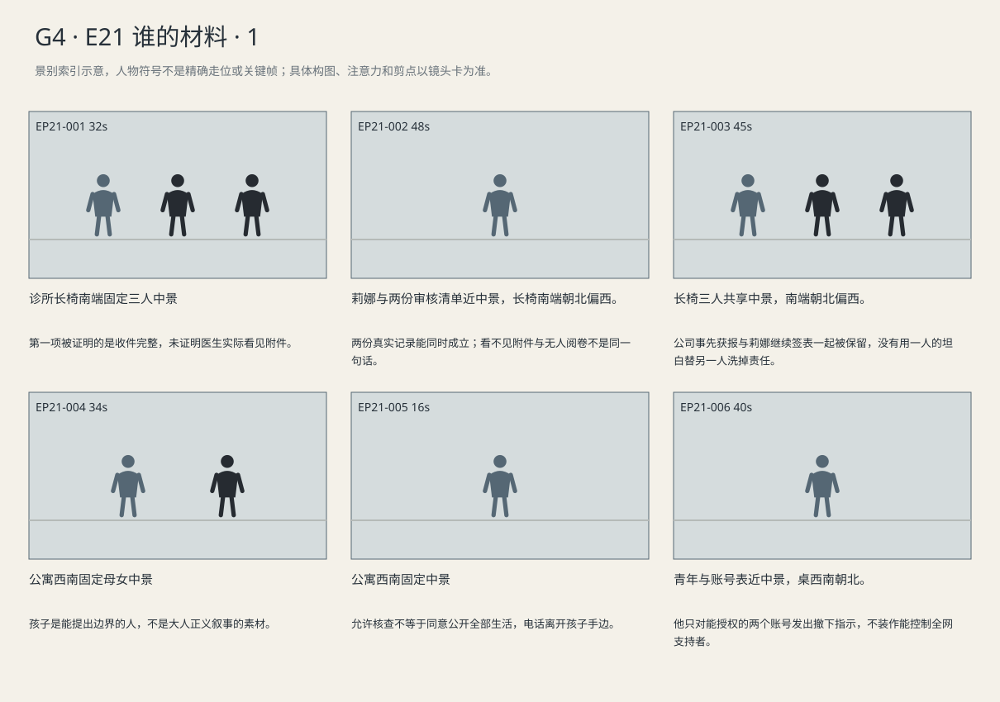
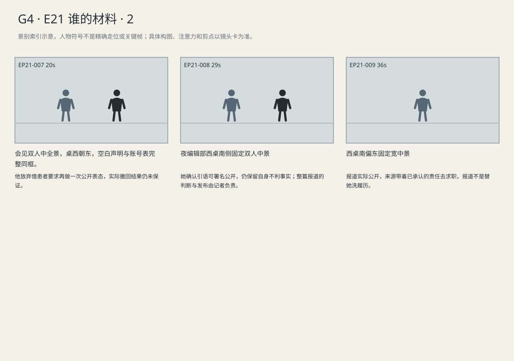

客服收件与医学审核两队列在正式材料中对上，公司事先获报与莉娜继续签表同时保留；患者要求下架并不等于全网可控。
剧本Markdown · 全部独立复制稿 · 英语字幕 · 中文字幕
详细剧本
E21-SC01 · 日·联邦认罪前两日 · CLINIC
宾州诊所西侧长椅的这一段暂不安排候诊。接待台在东，北侧治疗门关闭；凯文坐在中间，黑文件包立在两脚之间。诺拉在南端，红本摊在膝上，莉娜坐北端抱着灰信封。凯文把依法调取并获准查阅的去身份副本放到硬夹板上。诺拉先伸手指向收件记录，凯文用手指把她引回附件编号。
凯文（使用英语，把她的手引回编号再解释）：Start with the attachment numbers. The clinic receipt matches the intake log they recovered. The whole file got in.
中文对照：先看附件编号。诊所回执跟恢复出来的收件日志对得上，整份材料都收到了。
诺拉翻回诊所回执，把“完整”附近的一行指给他看。凯文把两页并齐，编号末位仍露着。
诺拉（使用英语，想先确定一个能写进报道的事实）：This receipt says complete.
中文对照：回执上写着完整。
凯文（使用英语，将她的笔留在核对任务上）：Complete at intake. Check the numbers before you write that.
中文对照：是收件完整。先对编号，再写。
她沿编号逐位对过去，先在自己的红本记下两份材料各自的名称。
诺拉逐位核到相同的末四位，手已经摸向红本里原来的判断。
诺拉（使用英语，笔先往旧判断移，话快了一步）：So someone just ignored it?
中文对照：所以就是有人没管？
莉娜用指尖抵住红本上那句还没写完的判断。她没有收走回执。
莉娜（使用英语，先问她据什么得出结论）：Which list are you looking at?
中文对照：你现在看的哪份清单？
诺拉（使用英语，还把到件当作进入审核）：The one they received.
中文对照：他们收件的那份。
莉娜（使用英语，抽出医学审核清单但不替她直接跳过比较）：That's the customer intake list. Put it beside this one.
中文对照：那是客服收件清单。把它跟这份并排放。
莉娜没有让她落笔，从夹板下抽出医生当时可见的清单，压在收件记录旁。
莉娜（使用英语，把医生可见清单放到旁边让她自己比）：Wait. This is what the doctor saw. The attachment never reached the medical review queue. He opened the page and signed. It wasn't there.
中文对照：等等，医生看到的是这份。附件没进医学复核队列。他打开页面，也签了名，可那页上没有附件。
她把真实登录记录和真实签名也摆上去。诺拉的笔停在旧句子上，随后把那句话划掉。
诺拉（使用英语，对过两份纸后，才划掉旧句子）：So neither record was fake.
中文对照：所以，两份记录都没造假。
诺拉没有收笔，把两页页首的日期重新对齐。凯文松开夹板，等她自己核完。
诺拉（使用英语，试一个仍可能推翻比较的解释）：Could this just be a later copy?
中文对照：会不会只是后来补的一份？
凯文（使用英语，让核验排除版本差异）：Check the date and case number. Same case, same review.
中文对照：核日期和案号。同一案，同一次审核。
她读过时间与案号，在红本原先的“版本？”旁做出已核记号；没有把患者编号抄入公开稿。
凯文从第二只透明套中取出质检报告与收悉回复，先对报告文号，再把其后日期的拒赔信放到回复右边。
凯文（使用英语，一页一页摆出时间关系，不替文件多加结论）：Here's their reply to her quality report. Months earlier. They'd been told about the gap. But these later denial letters still say they considered everything.
中文对照：这是他们给她质检报告的回复，早了好几个月。这处缺口，他们早已接到报告。可后来的拒赔信还在说，材料全都考虑过。
诺拉将公司回信翻到末尾，寻找处理承诺。莉娜指到收悉那一句，手没有替她翻去下一页。
诺拉（使用英语，不把收悉自动写成承诺整改）：Did they say they'd fix it?
中文对照：他们说过会改吗？
莉娜（使用英语，守住自己可证实的边界）：They said they'd received my report. That's what that reply proves.
中文对照：他们说报告收到了。那封回复只能证明这个。
诺拉准备拿走报告副本，莉娜按住了另一张签表，将它一起推到她面前。
莉娜（使用英语，按住她要遗漏的签表，不只交有利的一页）：I wrote the report. I also signed those later forms. You need both.
中文对照：报告是我写的，后来的表我也签了。两样你都得留。
诺拉看签表日期，再看莉娜。莉娜把自己的手从签名处移开，让那一栏完整露出。
诺拉（使用英语，让不利时间关系当面得到确认）：After that reply?
中文对照：那封回复之后，你还签了？
莉娜（使用英语，不往举报功劳上转移）：Yes.
中文对照：对。
凯文等诺拉把获准公开的两张去身份副本收进副本套，收回只供现场核验、不准公开的完整编号材料。莉娜的原报告仍归她保管，回到灰信封；诺拉收好准许带走的副本，合上红本。
E21-SC02 · 傍晚·同日 · MARA-HOME
傍晚，公寓中央餐桌被画本和蓝文件夹占着。艾莉坐北侧，握着绿蜡笔，给鲸画第二只翅膀。玛拉在南侧站着查看右手手机，厨房在东，西窗外的天色正在暗下。手机直播突然念出孩子的名字。
布莱克直播声音（使用英语，对直播观众招徕，语速利落）：Tomorrow: Ellie's files. The originals. No edits. You need to see what they put this family through.
中文对照：明天，艾莉的档案。原件，一点不删。你们得看看，这一家到底被折腾成什么样。
玛拉立刻按低音量。艾莉的笔停在纸上。
艾莉（使用英语，画到一半停住）：Is he talking about me?
中文对照：他在说我吗？
玛拉把手机降到腰旁，蹲在桌角；蓝文件夹仍平放桌南边。
玛拉（使用英语，蹲下来问，等孩子自己选）：Yes. I'll tell them to stop. Should I put it away?
中文对照：是。我会让他们停下。要我先收起来吗？
艾莉用左手盖住画上的名字，把画本转向自己。
艾莉（使用英语，自己把画转回去）：After you tell them. And don't show my whale.
中文对照：你说完再收。也别把我的鲸给他们看。
玛拉点头，起身退出直播并拨诺拉的电话。接通后，她一手把文件夹扣紧，另一手拿手机。
玛拉（使用英语，扣紧资料夹，把范围一项项说清）：Use what you've checked. Keep her name out. No treatment photos. I agreed to a review, not this.
中文对照：查清楚的你可以写。别写她的名字，治疗照片也别放。我答应的是复核，不是这个。
她听了片刻，不再把手机对着餐桌。通话结束，手机放到东侧厨房台面。艾莉抬眼确认，才接着画那只翅膀。
E21-SC03 · 日·认罪前一日 · VISIT
次日上午，会见室东窗窄光照着桌沿。海伦坐南侧，路易吉坐北侧；她手中只有写着撤下请求和账号名称的便签，没有病历。蓝案卷夹合在桌西。海伦把便签放到中央，名字一栏由她的手遮住。
海伦（使用英语，只转述她的要求，不带来患者原件）：Mara wants the records taken down. Kevin's working on it.
中文对照：玛拉要他们把档案撤掉。凯文已经在处理了。
路易吉没有去翻那一栏。
路易吉（使用英语，不翻遮住的姓名，只问自己能管的账号）：Which ones post for me?
中文对照：这里面哪些是替我发东西的？
海伦将另一张只列账号的纸转给他。他认出其中两个，用笔圈好，笔尖在第三个陌生账号前停住，再绕开。
路易吉（使用英语，圈出熟悉的两个，第三个不圈）：These two handle my posts. Tell them to take her records down. Don't send them any more copies.
中文对照：这两个替我发东西。告诉他们，把她的档案撤掉。别再发任何副本过去。
笔尖在第三行前停住，青年把纸转回给她。海伦在自己的待办上另开一行。
路易吉（使用英语，圈两个之后停住自己控制范围）：The third one isn't mine.
中文对照：第三个不是我的。
海伦（使用英语，不把陌生支持者当成能命令的下属）：Then don't mark it. Kevin can send a separate request.
中文对照：那就别圈。凯文可以另行发请求。
海伦收回有圈线的纸，将预备的个人声明空白页留在他那边。
海伦（使用英语，说清做得到的范围，不保证全网撤回）：I'll ask. But the copies are out there. And Blake may just say no.
中文对照：我会去问。可副本已经传开了，布莱克也可能根本不答应。
他把那张空白页推回，一起压在账号表下面。
路易吉（使用英语，把空白声明页推回去，不往上添话）：Ask anyway. And put that away. She doesn't need a statement from me.
中文对照：还是问。那张也收起来。她不需要我再发一份声明。
海伦将两张纸分开，空白页放回夹中；她只收起圈过的账号表。路易吉把笔松开，手留在桌沿。
E21-SC04 · 夜·同日 · NEWSROOM
夜里，编辑部西桌只有一盏暖台灯亮着，北面屏幕停在待发布稿，东侧编辑桌已经空了。诺拉坐桌南，莉娜坐北端，灰信封横在膝上。诺拉递出单独的引语核对页，整篇稿件仍留在自己电脑里。
诺拉（使用英语，只递引语页，等她读完）：These are your quotes. Check the last line too.
中文对照：这是引用你的话，最后一句也看看。
莉娜先读第一句，再读到底，没有立即抬头。
莉娜（使用英语，读过后确认，自己选择本次署名）：It's accurate. You can use my name.
中文对照：准确。可以写我的名字。
她用笔在自己“继续签表”的一句下画线，将旁边空白的删改栏划掉。
莉娜（使用英语，给那句画线后主动交回）：My lawyer wants that line about signing cut. Leave it in. Just take the patient numbers off.
中文对照：律师想把我继续签表那句删掉。留着吧，只把患者编号去掉。
诺拉把核对页放进来源记录套，打开公开下载文件清单，逐个确认所列只有去身份说明，不含患者档案。莉娜将笔盖按回，抱起灰信封。
诺拉（使用英语，确认清单和预览，不向她要新的文件）：The patient files stay with Kevin. The download is just the redacted findings.
中文对照：患者档案仍由凯文保管，公开下载只放去身份的调查说明。
诺拉检查预览页上没有孩子姓名与治疗照片，才把手移到发布键。
莉娜（使用英语，抱起信封准备走，语气回到明天的麻烦）：Send me the link. Interview's tomorrow. I'll have to explain this.
中文对照：链接发我。明天面试，这事我得自己跟他们解释。
莉娜站到椅子旁，抱着信封又转回半步。诺拉的手还在发布键旁。
诺拉（使用英语，问交付时间，不交出稿件决定权）：Do you want me to hold the link until after?
中文对照：要等面试完再把链接发你吗？
莉娜（使用英语，带着后果去处理自己的面试）：No. Send it when it's up. I don't want to walk in pretending they haven't read it.
中文对照：不用，发出来就给我。我不想走进去，还假装他们没看过。
莉娜已经站在椅旁，她抱好灰信封，直接绕桌向南门走。诺拉按下发布，看见稿件进入已发布列表，随后给莉娜发去链接。南门合上，诺拉桌面的红本仍摊在刚划去的旧判断那一页。
景别索引板
简化人物符号仅用于检索景别。完整镜头卡、信息变化及相邻剪点另页阅读。


逐镜复制稿
EP21-001 · 制作号E21-SH001 · 32s · 诊所长椅南端固定三人中景
第一项被证明的是收件完整，未证明医生实际看见附件。
成片采用 [0,32) 秒；2个生成候选，技术边界不是剪点。候选未生成。
成片镜 E21-SH001 共32秒；下面2个独立生成候选共同服务本镜。技术接续不等于成片剪点，不能将本文件整段提交为一次任务。先制作并核验连续表演、机位和声线，再决定延长或覆盖方案；当前无实际媒体。
【E21-SH001-G01 · 本镜采用 0—16 秒】
16:9横屏，当代美国真人现实悬疑。环境低至中等饱和，人物肤色保持真实差异与自然纹理；深黑保留衣料和道具分离，白纸与白领高光柔和有层次。冷暖来自本镜已有物理光源，不统一青橙、不磨皮、不以整体欠曝制造悬疑。遵循本镜机位、表演与焦点，不擅自追加缓推、急变焦或摇晃。
场次风格：本场时段：日·联邦认罪前两日。本场光源启用及强度以明确时段和正文为准，同场反打继承光源方向；不因景别变化任意换色温。 本地光色与材质：西窗与中性顶灯分区，灰绿只留在环境与材质；各人肤色保持区别，纸张不染成蓝绿。柜台和候诊区保持纵深，工作人员依自身任务活动。
总生成长度18秒，为中间16秒采用区间保留开头和结尾各1秒自然余量，不增添剧情。
人物：
以下为连续镜的身份库；人物是否已入画、离场及持物只依本段起态与动作，不能把整镜所有角色同时塞入本段。
患者代理律师凯文，40岁黑人男性，短发、棕灰西装、白衬衫、无领带，黑文件包。与海伦为不同委托关系；玛拉已和解，保全申请由其他尚未和解患者发起，玛拉按保留条款提供材料。
诺拉，32岁华裔美国女性，黑色齐肩直发、灰蓝大衣、米白衬衫、深色牛仔裤、黑鞋，红皮笔记本和黑手机。声音明亮清楚，采访时给对方说完。
莉娜，41岁白人女性，棕黑发低髻、薄金属框眼镜、橄榄绿开衫、白棉衬衫、炭灰裤，灰色文件信封。声音较轻、谨慎，有被追问后的停顿。
环境与光源：宾州治疗中心；入口南、走廊向北、东侧接待台、西侧长椅与玻璃窗、北端治疗门，东南侧有绕到治疗区的受控侧廊。西窗冷光、顶灯中性。不能剪到纽约同街。
景别/机位：诊所长椅南端固定三人中景
构图：沿用该成片镜既定机位和场景方向；当前站位、朝向与持物：凯文把夹板横放三人之间，诺拉指着收件行。
起始画面：凯文把夹板横放三人之间，诺拉指着收件行。
事件与表演：凯文摊两份去身份记录，诺拉逐位核编号，先得到整份材料已进客服收件的事实。 同一成片镜、同一相机路径与速度；接续上一段已发生动作，不重做开头。
注意力变化：凯文把夹板横放三人之间，诺拉指着收件行。 → 凯文摊两份去身份记录，诺拉逐位核编号，先得到整份材料已进客服收件的事实。 角色与物件停留在这一步的连续状态，机位及照明不重置。
摄影机：诊所长椅南端固定三人中景，凯文中、莉娜北、诺拉南；供比较的夹板在膝上，不挤到接待台或治疗区。
焦点：仅响应本段当前动作与受话关系；不预先转向尚未发生的后段事件。
结束状态：凯文摊两份去身份记录，诺拉逐位核编号，先得到整份材料已进客服收件的事实。 角色与物件停留在这一步的连续状态，机位及照明不重置。
声音：<诊所通风与远处不可辨的候诊人声；当前空间连续环境底声；拟音只随本段真实动作与物件接触发生，已完成事件不重演；可辨英语仅为下列本段对白。>
(无背景音乐；先以表演、对白、真实环境声成立，禁止在技术段接缝加音乐遮掩。)
准确对白按顺序：
凯文向诺拉与莉娜，把她的手引回编号再解释，只使用英语说一次：{Start with the attachment numbers. The clinic receipt matches the intake log they recovered. The whole file got in.}
只说列出的英语原句；导演说明不发声，不说中文译文，不额外加旁白或对白。手机/公文/字幕均由后期叠加，生成画面不排字。单镜连续，不加入内部切镜；前后保持身份、服装、门窗、物件与接触状态一致。
【E21-SH001-G02 · 本镜采用 16—32 秒】
16:9横屏，当代美国真人现实悬疑。环境低至中等饱和，人物肤色保持真实差异与自然纹理；深黑保留衣料和道具分离，白纸与白领高光柔和有层次。冷暖来自本镜已有物理光源，不统一青橙、不磨皮、不以整体欠曝制造悬疑。遵循本镜机位、表演与焦点，不擅自追加缓推、急变焦或摇晃。
场次风格：本场时段：日·联邦认罪前两日。本场光源启用及强度以明确时段和正文为准，同场反打继承光源方向；不因景别变化任意换色温。 本地光色与材质：西窗与中性顶灯分区，灰绿只留在环境与材质；各人肤色保持区别，纸张不染成蓝绿。柜台和候诊区保持纵深，工作人员依自身任务活动。
总生成长度18秒，为中间16秒采用区间保留开头和结尾各1秒自然余量，不增添剧情。
人物：
以下为连续镜的身份库；人物是否已入画、离场及持物只依本段起态与动作，不能把整镜所有角色同时塞入本段。
患者代理律师凯文，40岁黑人男性，短发、棕灰西装、白衬衫、无领带，黑文件包。与海伦为不同委托关系；玛拉已和解，保全申请由其他尚未和解患者发起，玛拉按保留条款提供材料。
诺拉，32岁华裔美国女性，黑色齐肩直发、灰蓝大衣、米白衬衫、深色牛仔裤、黑鞋，红皮笔记本和黑手机。声音明亮清楚，采访时给对方说完。
莉娜，41岁白人女性，棕黑发低髻、薄金属框眼镜、橄榄绿开衫、白棉衬衫、炭灰裤，灰色文件信封。声音较轻、谨慎，有被追问后的停顿。
环境与光源：宾州治疗中心；入口南、走廊向北、东侧接待台、西侧长椅与玻璃窗、北端治疗门，东南侧有绕到治疗区的受控侧廊。西窗冷光、顶灯中性。不能剪到纽约同街。
景别/机位：诊所长椅南端固定三人中景
构图：沿用该成片镜既定机位和场景方向；当前站位、朝向与持物：凯文摊两份去身份记录，诺拉逐位核编号，先得到整份材料已进客服收件的事实。 角色与物件停留在这一步的连续状态，机位及照明不重置。
起始画面：凯文摊两份去身份记录，诺拉逐位核编号，先得到整份材料已进客服收件的事实。 角色与物件停留在这一步的连续状态，机位及照明不重置。
事件与表演：诺拉指回执完整，凯文限定到件；她在红本记材料名称后提出有人不管的猜测。 同一成片镜、同一相机路径与速度；接续上一段已发生动作，不重做开头。
注意力变化：凯文摊两份去身份记录，诺拉逐位核编号，先得到整份材料已进客服收件的事实。 角色与物件停留在这一步的连续状态，机位及照明不重置。 → 诺拉指回执完整，凯文限定到件；她在红本记材料名称后提出有人不管的猜测。 角色与物件停留在这一步的连续状态，机位及照明不重置。
摄影机：诊所长椅南端固定三人中景，凯文中、莉娜北、诺拉南；供比较的夹板在膝上，不挤到接待台或治疗区。
焦点：仅响应本段当前动作与受话关系；不预先转向尚未发生的后段事件。
结束状态：诺拉指回执完整，凯文限定到件；她在红本记材料名称后提出有人不管的猜测。 角色与物件停留在这一步的连续状态，机位及照明不重置。
声音：<诊所通风与远处不可辨的候诊人声；当前空间连续环境底声；拟音只随本段真实动作与物件接触发生，已完成事件不重演；可辨英语仅为下列本段对白。>
(无背景音乐；先以表演、对白、真实环境声成立，禁止在技术段接缝加音乐遮掩。)
准确对白按顺序：
诺拉向凯文，想先确定一个能写进报道的事实，只使用英语说一次：{This receipt says complete.}
凯文向诺拉，将她的笔留在核对任务上，只使用英语说一次：{Complete at intake. Check the numbers before you write that.}
诺拉向莉娜，笔先往旧判断移，话快了一步，只使用英语说一次：{So someone just ignored it?}
只说列出的英语原句；导演说明不发声，不说中文译文，不额外加旁白或对白。手机/公文/字幕均由后期叠加，生成画面不排字。单镜连续，不加入内部切镜；前后保持身份、服装、门窗、物件与接触状态一致。静帧起态备稿
16:9横屏，当代美国真人现实悬疑。环境低至中等饱和，人物肤色保持真实差异与自然纹理；深黑保留衣料和道具分离，白纸与白领高光柔和有层次。冷暖来自本镜已有物理光源，不统一青橙、不磨皮、不以整体欠曝制造悬疑。遵循本镜机位、表演与焦点，不擅自追加缓推、急变焦或摇晃。
场次风格：本场时段：日·联邦认罪前两日。本场光源启用及强度以明确时段和正文为准，同场反打继承光源方向；不因景别变化任意换色温。 本地光色与材质：西窗与中性顶灯分区，灰绿只留在环境与材质；各人肤色保持区别，纸张不染成蓝绿。柜台和候诊区保持纵深，工作人员依自身任务活动。
患者代理律师凯文，40岁黑人男性，短发、棕灰西装、白衬衫、无领带，黑文件包。与海伦为不同委托关系；玛拉已和解，保全申请由其他尚未和解患者发起，玛拉按保留条款提供材料。
诺拉，32岁华裔美国女性，黑色齐肩直发、灰蓝大衣、米白衬衫、深色牛仔裤、黑鞋，红皮笔记本和黑手机。声音明亮清楚，采访时给对方说完。
莉娜，41岁白人女性，棕黑发低髻、薄金属框眼镜、橄榄绿开衫、白棉衬衫、炭灰裤，灰色文件信封。声音较轻、谨慎，有被追问后的停顿。
宾州治疗中心；入口南、走廊向北、东侧接待台、西侧长椅与玻璃窗、北端治疗门，东南侧有绕到治疗区的受控侧廊。西窗冷光、顶灯中性。不能剪到纽约同街。
诊所长椅南端固定三人中景；起态构图：凯文把夹板横放三人之间，诺拉指着收件行。。空间方位按上列环境，人物只处于起态；本镜后续调度不出现在静帧。此图不描画尚未发生的动作，不生成字幕和公文长字。
| 英语原句 | 中文对照 | 预定窗口 |
|---|
| 凯文：Start with the attachment numbers. The clinic receipt matches the intake log they recovered. The whole file got in. | 先看附件编号。诊所回执跟恢复出来的收件日志对得上，整份材料都收到了。 | 0.8–11.0s |
| 诺拉：This receipt says complete. | 回执上写着完整。 | 16.8–19.13s |
| 凯文：Complete at intake. Check the numbers before you write that. | 是收件完整。先对编号，再写。 | 19.78–25.26s |
| 诺拉：So someone just ignored it? | 所以就是有人没管？ | 25.91–28.77s |
观众信息：观众只知两份记录表面冲突。 → 第一项被证明的是收件完整，未证明医生实际看见附件。
切点：成片剪点由本镜结束后注意与任务发生变化决定：第一项被证明的是收件完整，未证明医生实际看见附件。 技术生成段边界不触发剪辑。
接口：下一成片镜 E21-SH002。同场时承接本镜已完成动作，不重复表演；跨场依剧本时间和空间建立。
EP21-002 · 制作号E21-SH002 · 48s · 莉娜与两份审核清单近中景，长椅南端朝北偏西。
两份真实记录能同时成立；看不见附件与无人阅卷不是同一句话。
成片采用 [32,80) 秒；3个生成候选，技术边界不是剪点。候选未生成。
成片镜 E21-SH002 共48秒；下面3个独立生成候选共同服务本镜。技术接续不等于成片剪点，不能将本文件整段提交为一次任务。先制作并核验连续表演、机位和声线，再决定延长或覆盖方案；当前无实际媒体。
【E21-SH002-G01 · 本镜采用 0—16 秒】
16:9横屏，当代美国真人现实悬疑。环境低至中等饱和，人物肤色保持真实差异与自然纹理；深黑保留衣料和道具分离，白纸与白领高光柔和有层次。冷暖来自本镜已有物理光源，不统一青橙、不磨皮、不以整体欠曝制造悬疑。遵循本镜机位、表演与焦点，不擅自追加缓推、急变焦或摇晃。
场次风格：本场时段：日·联邦认罪前两日。本场光源启用及强度以明确时段和正文为准，同场反打继承光源方向；不因景别变化任意换色温。 本地光色与材质：西窗与中性顶灯分区，灰绿只留在环境与材质；各人肤色保持区别，纸张不染成蓝绿。柜台和候诊区保持纵深，工作人员依自身任务活动。
总生成长度18秒，为中间16秒采用区间保留开头和结尾各1秒自然余量，不增添剧情。
人物：
以下为连续镜的身份库；人物是否已入画、离场及持物只依本段起态与动作，不能把整镜所有角色同时塞入本段。
莉娜，41岁白人女性，棕黑发低髻、薄金属框眼镜、橄榄绿开衫、白棉衬衫、炭灰裤，灰色文件信封。声音较轻、谨慎，有被追问后的停顿。
本镜画外继承，声源/人物不入画：诺拉，32岁华裔美国女性，黑色齐肩直发、灰蓝大衣、米白衬衫、深色牛仔裤、黑鞋，红皮笔记本和黑手机。声音明亮清楚，采访时给对方说完。
本镜画外继承，声源/人物不入画：患者代理律师凯文，40岁黑人男性，短发、棕灰西装、白衬衫、无领带，黑文件包。与海伦为不同委托关系；玛拉已和解，保全申请由其他尚未和解患者发起，玛拉按保留条款提供材料。
环境与光源：宾州治疗中心；入口南、走廊向北、东侧接待台、西侧长椅与玻璃窗、北端治疗门，东南侧有绕到治疗区的受控侧廊。西窗冷光、顶灯中性。不能剪到纽约同街。
景别/机位：莉娜与两份审核清单近中景
构图：沿用该成片镜既定机位和场景方向；当前站位、朝向与持物：莉娜的右手从夹板下抽出医生可见清单。
起始画面：莉娜的右手从夹板下抽出医生可见清单。
事件与表演：莉娜问她用哪份清单，抽出医学审核当时可见清单，两份并排不互相替代。 同一成片镜、同一相机路径与速度；接续上一段已发生动作，不重做开头。
注意力变化：莉娜的右手从夹板下抽出医生可见清单。 → 莉娜问她用哪份清单，抽出医学审核当时可见清单，两份并排不互相替代。 角色与物件停留在这一步的连续状态，机位及照明不重置。
摄影机：长椅南端固定近中景，以莉娜和夹板上并排的两份清单为主体；诺拉与凯文的核验问答留同场画外，不同时要求三张脸与所有小字清晰。
焦点：仅响应本段当前动作与受话关系；不预先转向尚未发生的后段事件。
结束状态：莉娜问她用哪份清单，抽出医学审核当时可见清单，两份并排不互相替代。 角色与物件停留在这一步的连续状态，机位及照明不重置。
声音：<诊所通风与远处不可辨的候诊人声；当前空间连续环境底声；拟音只随本段真实动作与物件接触发生，已完成事件不重演；可辨英语仅为下列本段对白。>
(无背景音乐；先以表演、对白、真实环境声成立，禁止在技术段接缝加音乐遮掩。)
准确对白按顺序：
莉娜向诺拉，先问她据什么得出结论，只使用英语说一次：{Which list are you looking at?}
诺拉向莉娜，还把到件当作进入审核，只使用英语说一次：{The one they received.}
莉娜向诺拉，抽出医学审核清单但不替她直接跳过比较，只使用英语说一次：{That's the customer intake list. Put it beside this one.}
只说列出的英语原句；导演说明不发声，不说中文译文，不额外加旁白或对白。手机/公文/字幕均由后期叠加，生成画面不排字。单镜连续，不加入内部切镜；前后保持身份、服装、门窗、物件与接触状态一致。
【E21-SH002-G02 · 本镜采用 16—32 秒】
16:9横屏，当代美国真人现实悬疑。环境低至中等饱和，人物肤色保持真实差异与自然纹理；深黑保留衣料和道具分离，白纸与白领高光柔和有层次。冷暖来自本镜已有物理光源，不统一青橙、不磨皮、不以整体欠曝制造悬疑。遵循本镜机位、表演与焦点，不擅自追加缓推、急变焦或摇晃。
场次风格：本场时段：日·联邦认罪前两日。本场光源启用及强度以明确时段和正文为准，同场反打继承光源方向；不因景别变化任意换色温。 本地光色与材质：西窗与中性顶灯分区，灰绿只留在环境与材质；各人肤色保持区别，纸张不染成蓝绿。柜台和候诊区保持纵深，工作人员依自身任务活动。
总生成长度18秒，为中间16秒采用区间保留开头和结尾各1秒自然余量，不增添剧情。
人物：
以下为连续镜的身份库；人物是否已入画、离场及持物只依本段起态与动作，不能把整镜所有角色同时塞入本段。
莉娜，41岁白人女性，棕黑发低髻、薄金属框眼镜、橄榄绿开衫、白棉衬衫、炭灰裤，灰色文件信封。声音较轻、谨慎，有被追问后的停顿。
本镜画外继承，声源/人物不入画：诺拉，32岁华裔美国女性，黑色齐肩直发、灰蓝大衣、米白衬衫、深色牛仔裤、黑鞋，红皮笔记本和黑手机。声音明亮清楚，采访时给对方说完。
本镜画外继承，声源/人物不入画：患者代理律师凯文，40岁黑人男性，短发、棕灰西装、白衬衫、无领带，黑文件包。与海伦为不同委托关系；玛拉已和解，保全申请由其他尚未和解患者发起，玛拉按保留条款提供材料。
环境与光源：宾州治疗中心；入口南、走廊向北、东侧接待台、西侧长椅与玻璃窗、北端治疗门，东南侧有绕到治疗区的受控侧廊。西窗冷光、顶灯中性。不能剪到纽约同街。
景别/机位：莉娜与两份审核清单近中景
构图：沿用该成片镜既定机位和场景方向；当前站位、朝向与持物：莉娜问她用哪份清单，抽出医学审核当时可见清单，两份并排不互相替代。 角色与物件停留在这一步的连续状态，机位及照明不重置。
起始画面：莉娜问她用哪份清单，抽出医学审核当时可见清单，两份并排不互相替代。 角色与物件停留在这一步的连续状态，机位及照明不重置。
事件与表演：莉娜说明附件未到医学队列，诺拉核真实登录与签名后停下旧判断。 同一成片镜、同一相机路径与速度；接续上一段已发生动作，不重做开头。
注意力变化：莉娜问她用哪份清单，抽出医学审核当时可见清单，两份并排不互相替代。 角色与物件停留在这一步的连续状态，机位及照明不重置。 → 莉娜说明附件未到医学队列，诺拉核真实登录与签名后停下旧判断。 角色与物件停留在这一步的连续状态，机位及照明不重置。
摄影机：长椅南端固定近中景，以莉娜和夹板上并排的两份清单为主体；诺拉与凯文的核验问答留同场画外，不同时要求三张脸与所有小字清晰。
焦点：仅响应本段当前动作与受话关系；不预先转向尚未发生的后段事件。
结束状态：莉娜说明附件未到医学队列，诺拉核真实登录与签名后停下旧判断。 角色与物件停留在这一步的连续状态，机位及照明不重置。
声音：<诊所通风与远处不可辨的候诊人声；当前空间连续环境底声；拟音只随本段真实动作与物件接触发生，已完成事件不重演；可辨英语仅为下列本段对白。>
(无背景音乐；先以表演、对白、真实环境声成立，禁止在技术段接缝加音乐遮掩。)
准确对白按顺序：
莉娜向诺拉与凯文，把医生可见清单放到旁边让她自己比，只使用英语说一次：{Wait. This is what the doctor saw. The attachment never reached the medical review queue. He opened the page and signed. It wasn't there.}
只说列出的英语原句；导演说明不发声，不说中文译文，不额外加旁白或对白。手机/公文/字幕均由后期叠加，生成画面不排字。单镜连续，不加入内部切镜；前后保持身份、服装、门窗、物件与接触状态一致。
【E21-SH002-G03 · 本镜采用 32—48 秒】
16:9横屏，当代美国真人现实悬疑。环境低至中等饱和，人物肤色保持真实差异与自然纹理；深黑保留衣料和道具分离，白纸与白领高光柔和有层次。冷暖来自本镜已有物理光源，不统一青橙、不磨皮、不以整体欠曝制造悬疑。遵循本镜机位、表演与焦点，不擅自追加缓推、急变焦或摇晃。
场次风格：本场时段：日·联邦认罪前两日。本场光源启用及强度以明确时段和正文为准，同场反打继承光源方向；不因景别变化任意换色温。 本地光色与材质：西窗与中性顶灯分区，灰绿只留在环境与材质；各人肤色保持区别，纸张不染成蓝绿。柜台和候诊区保持纵深，工作人员依自身任务活动。
总生成长度18秒，为中间16秒采用区间保留开头和结尾各1秒自然余量，不增添剧情。
人物：
以下为连续镜的身份库；人物是否已入画、离场及持物只依本段起态与动作，不能把整镜所有角色同时塞入本段。
莉娜，41岁白人女性，棕黑发低髻、薄金属框眼镜、橄榄绿开衫、白棉衬衫、炭灰裤，灰色文件信封。声音较轻、谨慎，有被追问后的停顿。
本镜画外继承，声源/人物不入画：诺拉，32岁华裔美国女性，黑色齐肩直发、灰蓝大衣、米白衬衫、深色牛仔裤、黑鞋，红皮笔记本和黑手机。声音明亮清楚，采访时给对方说完。
本镜画外继承，声源/人物不入画：患者代理律师凯文，40岁黑人男性，短发、棕灰西装、白衬衫、无领带，黑文件包。与海伦为不同委托关系；玛拉已和解，保全申请由其他尚未和解患者发起，玛拉按保留条款提供材料。
环境与光源：宾州治疗中心；入口南、走廊向北、东侧接待台、西侧长椅与玻璃窗、北端治疗门，东南侧有绕到治疗区的受控侧廊。西窗冷光、顶灯中性。不能剪到纽约同街。
景别/机位：莉娜与两份审核清单近中景
构图：沿用该成片镜既定机位和场景方向；当前站位、朝向与持物：莉娜说明附件未到医学队列，诺拉核真实登录与签名后停下旧判断。 角色与物件停留在这一步的连续状态，机位及照明不重置。
起始画面：莉娜说明附件未到医学队列，诺拉核真实登录与签名后停下旧判断。 角色与物件停留在这一步的连续状态，机位及照明不重置。
事件与表演：诺拉尝试较晚副本解释，凯文指日期案号让她自己核，同案同次比完才划去版本问号。 同一成片镜、同一相机路径与速度；接续上一段已发生动作，不重做开头。
注意力变化：莉娜说明附件未到医学队列，诺拉核真实登录与签名后停下旧判断。 角色与物件停留在这一步的连续状态，机位及照明不重置。 → 诺拉尝试较晚副本解释，凯文指日期案号让她自己核，同案同次比完才划去版本问号。 角色与物件停留在这一步的连续状态，机位及照明不重置。
摄影机：长椅南端固定近中景，以莉娜和夹板上并排的两份清单为主体；诺拉与凯文的核验问答留同场画外，不同时要求三张脸与所有小字清晰。
焦点：仅响应本段当前动作与受话关系；不预先转向尚未发生的后段事件。
结束状态：诺拉尝试较晚副本解释，凯文指日期案号让她自己核，同案同次比完才划去版本问号。 角色与物件停留在这一步的连续状态，机位及照明不重置。
声音：<诊所通风与远处不可辨的候诊人声；当前空间连续环境底声；拟音只随本段真实动作与物件接触发生，已完成事件不重演；可辨英语仅为下列本段对白。>
(无背景音乐；先以表演、对白、真实环境声成立，禁止在技术段接缝加音乐遮掩。)
准确对白按顺序：
诺拉向莉娜，对过两份纸后，才划掉旧句子，只使用英语说一次：{So neither record was fake.}
诺拉向凯文，试一个仍可能推翻比较的解释，只使用英语说一次：{Could this just be a later copy?}
凯文向诺拉，让核验排除版本差异，只使用英语说一次：{Check the date and case number. Same case, same review.}
只说列出的英语原句；导演说明不发声，不说中文译文，不额外加旁白或对白。手机/公文/字幕均由后期叠加，生成画面不排字。单镜连续，不加入内部切镜；前后保持身份、服装、门窗、物件与接触状态一致。静帧起态备稿
16:9横屏，当代美国真人现实悬疑。环境低至中等饱和，人物肤色保持真实差异与自然纹理；深黑保留衣料和道具分离，白纸与白领高光柔和有层次。冷暖来自本镜已有物理光源，不统一青橙、不磨皮、不以整体欠曝制造悬疑。遵循本镜机位、表演与焦点，不擅自追加缓推、急变焦或摇晃。
场次风格：本场时段：日·联邦认罪前两日。本场光源启用及强度以明确时段和正文为准，同场反打继承光源方向；不因景别变化任意换色温。 本地光色与材质：西窗与中性顶灯分区，灰绿只留在环境与材质；各人肤色保持区别，纸张不染成蓝绿。柜台和候诊区保持纵深，工作人员依自身任务活动。
莉娜，41岁白人女性，棕黑发低髻、薄金属框眼镜、橄榄绿开衫、白棉衬衫、炭灰裤，灰色文件信封。声音较轻、谨慎，有被追问后的停顿。
宾州治疗中心；入口南、走廊向北、东侧接待台、西侧长椅与玻璃窗、北端治疗门，东南侧有绕到治疗区的受控侧廊。西窗冷光、顶灯中性。不能剪到纽约同街。
莉娜与两份审核清单近中景，长椅南端朝北偏西。；起态构图：莉娜的右手从夹板下抽出医生可见清单。。空间方位按上列环境，人物只处于起态；本镜后续调度不出现在静帧。此图不描画尚未发生的动作，不生成字幕和公文长字。
| 英语原句 | 中文对照 | 预定窗口 |
|---|
| 莉娜：Which list are you looking at? | 你现在看的哪份清单？ | 0.8–4.18s |
| 诺拉：The one they received. | 他们收件的那份。 | 4.83–7.16s |
| 莉娜：That's the customer intake list. Put it beside this one. | 那是客服收件清单。把它跟这份并排放。 | 7.81–13.29s |
| 莉娜：Wait. This is what the doctor saw. The attachment never reached the medical review queue. He opened the page and signed. It wasn't there. | 等等，医生看到的是这份。附件没进医学复核队列。他打开页面，也签了名，可那页上没有附件。 | 16.8–29.62s |
| 诺拉：So neither record was fake. | 所以，两份记录都没造假。 | 32.8–35.66s |
| 诺拉：Could this just be a later copy? | 会不会只是后来补的一份？ | 36.31–40.22s |
| 凯文：Check the date and case number. Same case, same review. | 核日期和案号。同一案，同一次审核。 | 40.87–46.35s |
观众信息：笔悬着等待有人忽略的证据。 → 两份真实记录能同时成立；看不见附件与无人阅卷不是同一句话。
切点：成片剪点由本镜结束后注意与任务发生变化决定：两份真实记录能同时成立；看不见附件与无人阅卷不是同一句话。 技术生成段边界不触发剪辑。
接口：下一成片镜 E21-SH003。同场时承接本镜已完成动作，不重复表演；跨场依剧本时间和空间建立。
EP21-003 · 制作号E21-SH003 · 45s · 长椅三人共享中景，南端朝北偏西。
公司事先获报与莉娜继续签表一起被保留，没有用一人的坦白替另一人洗掉责任。
成片采用 [80,125) 秒；2个生成候选，技术边界不是剪点。候选未生成。
成片镜 E21-SH003 共45秒；下面2个独立生成候选共同服务本镜。技术接续不等于成片剪点，不能将本文件整段提交为一次任务。先制作并核验连续表演、机位和声线，再决定延长或覆盖方案；当前无实际媒体。
【E21-SH003-G01 · 本镜采用 0—23 秒】
16:9横屏，当代美国真人现实悬疑。环境低至中等饱和，人物肤色保持真实差异与自然纹理；深黑保留衣料和道具分离，白纸与白领高光柔和有层次。冷暖来自本镜已有物理光源，不统一青橙、不磨皮、不以整体欠曝制造悬疑。遵循本镜机位、表演与焦点，不擅自追加缓推、急变焦或摇晃。
场次风格：本场时段：日·联邦认罪前两日。本场光源启用及强度以明确时段和正文为准，同场反打继承光源方向；不因景别变化任意换色温。 本地光色与材质：西窗与中性顶灯分区，灰绿只留在环境与材质；各人肤色保持区别，纸张不染成蓝绿。柜台和候诊区保持纵深，工作人员依自身任务活动。
总生成长度25秒，为中间23秒采用区间保留开头和结尾各1秒自然余量，不增添剧情。
人物：
以下为连续镜的身份库；人物是否已入画、离场及持物只依本段起态与动作，不能把整镜所有角色同时塞入本段。
患者代理律师凯文，40岁黑人男性，短发、棕灰西装、白衬衫、无领带，黑文件包。与海伦为不同委托关系；玛拉已和解，保全申请由其他尚未和解患者发起，玛拉按保留条款提供材料。
莉娜，41岁白人女性，棕黑发低髻、薄金属框眼镜、橄榄绿开衫、白棉衬衫、炭灰裤，灰色文件信封。声音较轻、谨慎，有被追问后的停顿。
诺拉，32岁华裔美国女性，黑色齐肩直发、灰蓝大衣、米白衬衫、深色牛仔裤、黑鞋，红皮笔记本和黑手机。声音明亮清楚，采访时给对方说完。
环境与光源：宾州治疗中心；入口南、走廊向北、东侧接待台、西侧长椅与玻璃窗、北端治疗门，东南侧有绕到治疗区的受控侧廊。西窗冷光、顶灯中性。不能剪到纽约同街。
景别/机位：长椅三人共享中景保持整镜起始景别：凯文中、莉娜北、诺拉南，夹板在膝间，所有纸沿各自手边进入。
构图：沿用该成片镜既定机位和场景方向；当前站位、朝向与持物：凯文将报告与收悉回复从另一透明套取出。
起始画面：凯文将报告与收悉回复从另一透明套取出。
事件与表演：凯文用独立质检报告和收悉回复建立更早通知，再摆后来的拒赔信；诺拉寻找是否承诺整改。 同一成片镜、同一相机路径与速度；接续上一段已发生动作，不重做开头。
注意力变化：凯文将报告与收悉回复从另一透明套取出。 → 独立质检报告、公司收悉回复和后发拒赔信已经摊在夹板上，凯文保持夹板稳定；莉娜后来的签字表仍在她手边，尚未移入，诺拉已经看完当前三份日期。相机停在长椅南端原共享中景，尚未推进。
摄影机：长椅南端朝北偏西原共享机位完全固定；本段只核报告、收悉回复与后发拒赔信，莉娜尚未移入自己的后签表，推进尚未开始。
焦点：先让公司已获报告的日期关系与回信能证明什么清楚，不能在每次翻页上靠近；不预先强调莉娜签名。
结束状态：独立质检报告、公司收悉回复和后发拒赔信已经摊在夹板上，凯文保持夹板稳定；莉娜后来的签字表仍在她手边，尚未移入，诺拉已经看完当前三份日期。相机停在长椅南端原共享中景，尚未推进。
声音：<诊所通风与远处不可辨的候诊人声；当前空间连续环境底声；拟音只随本段真实动作与物件接触发生，已完成事件不重演；可辨英语仅为下列本段对白。>
(无背景音乐；先以表演、对白、真实环境声成立，禁止在技术段接缝加音乐遮掩。)
准确对白按顺序：
凯文向诺拉与莉娜，一页一页摆出时间关系，不替文件多加结论，只使用英语说一次：{Here's their reply to her quality report. Months earlier. They'd been told about the gap. But these later denial letters still say they considered everything.}
诺拉向莉娜，不把收悉自动写成承诺整改，只使用英语说一次：{Did they say they'd fix it?}
只说列出的英语原句；导演说明不发声，不说中文译文，不额外加旁白或对白。手机/公文/字幕均由后期叠加，生成画面不排字。单镜连续，不加入内部切镜；前后保持身份、服装、门窗、物件与接触状态一致。
【E21-SH003-G02 · 本镜采用 23—45 秒】
16:9横屏，当代美国真人现实悬疑。环境低至中等饱和，人物肤色保持真实差异与自然纹理；深黑保留衣料和道具分离，白纸与白领高光柔和有层次。冷暖来自本镜已有物理光源，不统一青橙、不磨皮、不以整体欠曝制造悬疑。遵循本镜机位、表演与焦点，不擅自追加缓推、急变焦或摇晃。
场次风格：本场时段：日·联邦认罪前两日。本场光源启用及强度以明确时段和正文为准，同场反打继承光源方向；不因景别变化任意换色温。 本地光色与材质：西窗与中性顶灯分区，灰绿只留在环境与材质；各人肤色保持区别，纸张不染成蓝绿。柜台和候诊区保持纵深，工作人员依自身任务活动。
总生成长度24秒，为中间22秒采用区间保留开头和结尾各1秒自然余量，不增添剧情。
人物：
以下为连续镜的身份库；人物是否已入画、离场及持物只依本段起态与动作，不能把整镜所有角色同时塞入本段。
患者代理律师凯文，40岁黑人男性，短发、棕灰西装、白衬衫、无领带，黑文件包。与海伦为不同委托关系；玛拉已和解，保全申请由其他尚未和解患者发起，玛拉按保留条款提供材料。
莉娜，41岁白人女性，棕黑发低髻、薄金属框眼镜、橄榄绿开衫、白棉衬衫、炭灰裤，灰色文件信封。声音较轻、谨慎，有被追问后的停顿。
诺拉，32岁华裔美国女性，黑色齐肩直发、灰蓝大衣、米白衬衫、深色牛仔裤、黑鞋，红皮笔记本和黑手机。声音明亮清楚，采访时给对方说完。
环境与光源：宾州治疗中心；入口南、走廊向北、东侧接待台、西侧长椅与玻璃窗、北端治疗门，东南侧有绕到治疗区的受控侧廊。西窗冷光、顶灯中性。不能剪到纽约同街。
景别/机位：同一朝北偏西轴内由共享中景连续略收紧，莉娜与后签表成为重点，凯文和诺拉不换座、不另切三人近景。
构图：沿用该成片镜既定机位和场景方向；当前站位、朝向与持物：独立质检报告、公司收悉回复和后发拒赔信已经摊在夹板上，凯文保持夹板稳定；莉娜后来的签字表仍在她手边，尚未移入，诺拉已经看完当前三份日期。相机停在长椅南端原共享中景，尚未推进。
起始画面：独立质检报告、公司收悉回复和后发拒赔信已经摊在夹板上，凯文保持夹板稳定；莉娜后来的签字表仍在她手边，尚未移入，诺拉已经看完当前三份日期。相机停在长椅南端原共享中景，尚未推进。
事件与表演：莉娜限定收悉所证范围，并把自己后来签表放回；诺拉确认之后仍签，她答对，再按权限分收。 同一成片镜、同一相机路径与速度；接续上一段已发生动作，不重做开头。
注意力变化：独立质检报告、公司收悉回复和后发拒赔信已经摊在夹板上，凯文保持夹板稳定；莉娜后来的签字表仍在她手边，尚未移入，诺拉已经看完当前三份日期。相机停在长椅南端原共享中景，尚未推进。 → 凯文已收回完整编号核验页；莉娜把自己的原报告和后签表收在灰信封中；诺拉手边只留下获准公开的去身份副本。三人座位不变，相机已停在一次短前移后的终点。
摄影机：继承G01固定原位置。莉娜主动把后来自己签过的表移入夹板时，才沿长椅南端许可方向一次短前移约二十厘米，到她与签表较清楚的位置后停住，核问及分收均保持终点。
焦点：推进只跟责任转回莉娜本人这一改变；她承认回复之后仍签，随后按权限分收时不再推近或回退。
结束状态：凯文已收回完整编号核验页；莉娜把自己的原报告和后签表收在灰信封中；诺拉手边只留下获准公开的去身份副本。三人座位不变，相机已停在一次短前移后的终点。
声音：<诊所通风与远处不可辨的候诊人声；当前空间连续环境底声；拟音只随本段真实动作与物件接触发生，已完成事件不重演；可辨英语仅为下列本段对白。>
(无背景音乐；先以表演、对白、真实环境声成立，禁止在技术段接缝加音乐遮掩。)
准确对白按顺序：
莉娜向诺拉，守住自己可证实的边界，只使用英语说一次：{They said they'd received my report. That's what that reply proves.}
莉娜向凯文，按住她要遗漏的签表，不只交有利的一页，只使用英语说一次：{I wrote the report. I also signed those later forms. You need both.}
诺拉向莉娜，让不利时间关系当面得到确认，只使用英语说一次：{After that reply?}
莉娜向诺拉，不往举报功劳上转移，只使用英语说一次：{Yes.}
只说列出的英语原句；导演说明不发声，不说中文译文，不额外加旁白或对白。手机/公文/字幕均由后期叠加，生成画面不排字。单镜连续，不加入内部切镜；前后保持身份、服装、门窗、物件与接触状态一致。静帧起态备稿
16:9横屏，当代美国真人现实悬疑。环境低至中等饱和，人物肤色保持真实差异与自然纹理；深黑保留衣料和道具分离，白纸与白领高光柔和有层次。冷暖来自本镜已有物理光源，不统一青橙、不磨皮、不以整体欠曝制造悬疑。遵循本镜机位、表演与焦点，不擅自追加缓推、急变焦或摇晃。
场次风格：本场时段：日·联邦认罪前两日。本场光源启用及强度以明确时段和正文为准，同场反打继承光源方向；不因景别变化任意换色温。 本地光色与材质：西窗与中性顶灯分区，灰绿只留在环境与材质；各人肤色保持区别，纸张不染成蓝绿。柜台和候诊区保持纵深，工作人员依自身任务活动。
患者代理律师凯文，40岁黑人男性，短发、棕灰西装、白衬衫、无领带，黑文件包。与海伦为不同委托关系；玛拉已和解，保全申请由其他尚未和解患者发起，玛拉按保留条款提供材料。
莉娜，41岁白人女性，棕黑发低髻、薄金属框眼镜、橄榄绿开衫、白棉衬衫、炭灰裤，灰色文件信封。声音较轻、谨慎，有被追问后的停顿。
诺拉，32岁华裔美国女性，黑色齐肩直发、灰蓝大衣、米白衬衫、深色牛仔裤、黑鞋，红皮笔记本和黑手机。声音明亮清楚，采访时给对方说完。
宾州治疗中心；入口南、走廊向北、东侧接待台、西侧长椅与玻璃窗、北端治疗门，东南侧有绕到治疗区的受控侧廊。西窗冷光、顶灯中性。不能剪到纽约同街。
长椅三人共享中景，南端朝北偏西。；起态构图：凯文将报告与收悉回复从另一透明套取出。。空间方位按上列环境，人物只处于起态；本镜后续调度不出现在静帧。此图不描画尚未发生的动作，不生成字幕和公文长字。
| 英语原句 | 中文对照 | 预定窗口 |
|---|
| 凯文：Here's their reply to her quality report. Months earlier. They'd been told about the gap. But these later denial letters still say they considered everything. | 这是他们给她质检报告的回复，早了好几个月。这处缺口，他们早已接到报告。可后来的拒赔信还在说，材料全都考虑过。 | 0.8–12.05s |
| 诺拉：Did they say they'd fix it? | 他们说过会改吗？ | 12.7–16.08s |
| 莉娜：They said they'd received my report. That's what that reply proves. | 他们说报告收到了。那封回复只能证明这个。 | 23.8–29.8s |
| 莉娜：I wrote the report. I also signed those later forms. You need both. | 报告是我写的，后来的表我也签了。两样你都得留。 | 30.45–37.5s |
| 诺拉：After that reply? | 那封回复之后，你还签了？ | 38.15–39.96s |
| 莉娜：Yes. | 对。 | 40.61–41.67s |
观众信息：队列断层已证实，谁提前知道仍未确定。 → 公司事先获报与莉娜继续签表一起被保留，没有用一人的坦白替另一人洗掉责任。
切点：成片剪点由本镜结束后注意与任务发生变化决定：公司事先获报与莉娜继续签表一起被保留，没有用一人的坦白替另一人洗掉责任。 技术生成段边界不触发剪辑。
接口：本场结果成立后切入 E21-SC02（MARA-HOME，傍晚·同日）；以新场开头建立空间和人物持物，环境声按新场接入。
EP21-004 · 制作号E21-SH004 · 34s · 公寓西南固定母女中景
孩子是能提出边界的人，不是大人正义叙事的素材。
成片采用 [125,159) 秒；2个生成候选，技术边界不是剪点。候选未生成。
成片镜 E21-SH004 共34秒；下面2个独立生成候选共同服务本镜。技术接续不等于成片剪点，不能将本文件整段提交为一次任务。先制作并核验连续表演、机位和声线，再决定延长或覆盖方案；当前无实际媒体。
【E21-SH004-G01 · 本镜采用 0—17 秒】
16:9横屏，当代美国真人现实悬疑。环境低至中等饱和，人物肤色保持真实差异与自然纹理；深黑保留衣料和道具分离，白纸与白领高光柔和有层次。冷暖来自本镜已有物理光源，不统一青橙、不磨皮、不以整体欠曝制造悬疑。遵循本镜机位、表演与焦点，不擅自追加缓推、急变焦或摇晃。
场次风格：本场时段：傍晚·同日。本场为傍晚过渡，窗外亮度只按正文已有暮光维持，不改成正午直射；场内既有灯具的明暗关系连续。 本地光色与材质：米灰针织、旧木、蓝夹与绿色蜡笔保留不同颜色。西窗、东厨房灯和台灯依本场时段启用；暖灯局限在实际照到的人和桌面，不染全屋橙。对白与手头生活共存，疲态和皮肤细节保留。
总生成长度19秒，为中间17秒采用区间保留开头和结尾各1秒自然余量，不增添剧情。
人物：
以下为连续镜的身份库；人物是否已入画、离场及持物只依本段起态与动作，不能把整镜所有角色同时塞入本段。
玛拉，38岁白人女性，栗棕发低马尾、眼下疲态、圆方脸；米灰针织衫、深色长裤。声音中音，快而实在，对孩子放缓。
艾莉，9岁女孩，栗色齐肩发、柔白卫衣、浅蓝裤，画本与绿蜡笔。儿童声音自然，保留自己的兴趣与拒绝，不只当疾病道具。
本镜画外继承，声源/人物不入画：直播者布莱克，30岁白人男性，黑短发、黑夹克、白T恤、手机稳定器。前期售卖周边，后期围堵诊所；不新增他受公司秘密指使的阴谋。
声源与背景限定：布莱克准确台词来自玛拉手机直播，主播不在公寓内，不切成另一处主播现场。
环境与光源：小公寓；入口南，厨房东，餐桌中央，西窗，北侧孩子卧室；桌上玛拉的蓝色资料夹不自行换色，绿蜡笔与画本归艾莉。
景别/机位：公寓西南固定母女中景
构图：沿用该成片镜既定机位和场景方向；当前站位、朝向与持物：艾莉画第二只翅膀，玛拉站桌南看右手手机。
起始画面：艾莉画第二只翅膀，玛拉站桌南看右手手机。
事件与表演：直播从手机发声，孩子停笔，母亲降音量并把手机放腰侧，蹲到桌角。 同一成片镜、同一相机路径与速度；接续上一段已发生动作，不重做开头。
注意力变化：艾莉画第二只翅膀，玛拉站桌南看右手手机。 → 直播从手机发声，孩子停笔，母亲降音量并把手机放腰侧，蹲到桌角。 角色与物件停留在这一步的连续状态，机位及照明不重置。
摄影机：公寓西南固定母女中景，桌北孩子、南侧母亲、东厨房在同一可达空间；母亲蹲下后留同框，不插直播现场。
焦点：仅响应本段当前动作与受话关系；不预先转向尚未发生的后段事件。
结束状态：直播从手机发声，孩子停笔，母亲降音量并把手机放腰侧，蹲到桌角。 角色与物件停留在这一步的连续状态，机位及照明不重置。
声音：<东厨房冰箱低响与窗外遥远交通声；当前空间连续环境底声；拟音只随本段真实动作与物件接触发生，已完成事件不重演；可辨英语仅为下列本段对白。>
(无背景音乐；先以表演、对白、真实环境声成立，禁止在技术段接缝加音乐遮掩。)
准确对白按顺序：
布莱克直播声音向直播观众，对直播观众招徕，语速利落，只使用英语说一次：{Tomorrow: Ellie's files. The originals. No edits. You need to see what they put this family through.}
艾莉向玛拉，画到一半停住，只使用英语说一次：{Is he talking about me?}
画外声音归属：布莱克直播声音仅由本镜明确的电话/屏幕/画外位置传出，声源本人不凭空出现在房间内。
只说列出的英语原句；导演说明不发声，不说中文译文，不额外加旁白或对白。手机/公文/字幕均由后期叠加，生成画面不排字。单镜连续，不加入内部切镜；前后保持身份、服装、门窗、物件与接触状态一致。
【E21-SH004-G02 · 本镜采用 17—34 秒】
16:9横屏，当代美国真人现实悬疑。环境低至中等饱和，人物肤色保持真实差异与自然纹理；深黑保留衣料和道具分离，白纸与白领高光柔和有层次。冷暖来自本镜已有物理光源，不统一青橙、不磨皮、不以整体欠曝制造悬疑。遵循本镜机位、表演与焦点，不擅自追加缓推、急变焦或摇晃。
场次风格：本场时段：傍晚·同日。本场为傍晚过渡，窗外亮度只按正文已有暮光维持，不改成正午直射；场内既有灯具的明暗关系连续。 本地光色与材质：米灰针织、旧木、蓝夹与绿色蜡笔保留不同颜色。西窗、东厨房灯和台灯依本场时段启用；暖灯局限在实际照到的人和桌面，不染全屋橙。对白与手头生活共存，疲态和皮肤细节保留。
总生成长度19秒，为中间17秒采用区间保留开头和结尾各1秒自然余量，不增添剧情。
人物：
以下为连续镜的身份库；人物是否已入画、离场及持物只依本段起态与动作，不能把整镜所有角色同时塞入本段。
玛拉，38岁白人女性，栗棕发低马尾、眼下疲态、圆方脸；米灰针织衫、深色长裤。声音中音，快而实在，对孩子放缓。
艾莉，9岁女孩，栗色齐肩发、柔白卫衣、浅蓝裤，画本与绿蜡笔。儿童声音自然，保留自己的兴趣与拒绝，不只当疾病道具。
本镜画外继承，声源/人物不入画：直播者布莱克，30岁白人男性，黑短发、黑夹克、白T恤、手机稳定器。前期售卖周边，后期围堵诊所；不新增他受公司秘密指使的阴谋。
声源与背景限定：布莱克准确台词来自玛拉手机直播，主播不在公寓内，不切成另一处主播现场。
环境与光源：小公寓；入口南，厨房东，餐桌中央，西窗，北侧孩子卧室；桌上玛拉的蓝色资料夹不自行换色，绿蜡笔与画本归艾莉。
景别/机位：公寓西南固定母女中景
构图：沿用该成片镜既定机位和场景方向；当前站位、朝向与持物：直播从手机发声，孩子停笔，母亲降音量并把手机放腰侧，蹲到桌角。 角色与物件停留在这一步的连续状态，机位及照明不重置。
起始画面：直播从手机发声，孩子停笔，母亲降音量并把手机放腰侧，蹲到桌角。 角色与物件停留在这一步的连续状态，机位及照明不重置。
事件与表演：母亲等孩子决定；孩子护画说先制止再收，母亲起身退出直播，不把画交给镜头。 同一成片镜、同一相机路径与速度；接续上一段已发生动作，不重做开头。
注意力变化：直播从手机发声，孩子停笔，母亲降音量并把手机放腰侧，蹲到桌角。 角色与物件停留在这一步的连续状态，机位及照明不重置。 → 母亲等孩子决定；孩子护画说先制止再收，母亲起身退出直播，不把画交给镜头。 角色与物件停留在这一步的连续状态，机位及照明不重置。
摄影机：公寓西南固定母女中景，桌北孩子、南侧母亲、东厨房在同一可达空间；母亲蹲下后留同框，不插直播现场。
焦点：仅响应本段当前动作与受话关系；不预先转向尚未发生的后段事件。
结束状态：母亲等孩子决定；孩子护画说先制止再收，母亲起身退出直播，不把画交给镜头。 角色与物件停留在这一步的连续状态，机位及照明不重置。
声音：<东厨房冰箱低响与窗外遥远交通声；当前空间连续环境底声；拟音只随本段真实动作与物件接触发生，已完成事件不重演；可辨英语仅为下列本段对白。>
(无背景音乐；先以表演、对白、真实环境声成立，禁止在技术段接缝加音乐遮掩。)
准确对白按顺序：
玛拉向艾莉，蹲下来问，等孩子自己选，只使用英语说一次：{Yes. I'll tell them to stop. Should I put it away?}
艾莉向玛拉，自己把画转回去，只使用英语说一次：{After you tell them. And don't show my whale.}
只说列出的英语原句；导演说明不发声，不说中文译文，不额外加旁白或对白。手机/公文/字幕均由后期叠加，生成画面不排字。单镜连续，不加入内部切镜；前后保持身份、服装、门窗、物件与接触状态一致。静帧起态备稿
16:9横屏，当代美国真人现实悬疑。环境低至中等饱和，人物肤色保持真实差异与自然纹理；深黑保留衣料和道具分离，白纸与白领高光柔和有层次。冷暖来自本镜已有物理光源，不统一青橙、不磨皮、不以整体欠曝制造悬疑。遵循本镜机位、表演与焦点，不擅自追加缓推、急变焦或摇晃。
场次风格：本场时段：傍晚·同日。本场为傍晚过渡，窗外亮度只按正文已有暮光维持，不改成正午直射；场内既有灯具的明暗关系连续。 本地光色与材质：米灰针织、旧木、蓝夹与绿色蜡笔保留不同颜色。西窗、东厨房灯和台灯依本场时段启用；暖灯局限在实际照到的人和桌面，不染全屋橙。对白与手头生活共存，疲态和皮肤细节保留。
玛拉，38岁白人女性，栗棕发低马尾、眼下疲态、圆方脸；米灰针织衫、深色长裤。声音中音，快而实在，对孩子放缓。
艾莉，9岁女孩，栗色齐肩发、柔白卫衣、浅蓝裤，画本与绿蜡笔。儿童声音自然，保留自己的兴趣与拒绝，不只当疾病道具。
小公寓；入口南，厨房东，餐桌中央，西窗，北侧孩子卧室；桌上玛拉的蓝色资料夹不自行换色，绿蜡笔与画本归艾莉。
公寓西南固定母女中景；起态构图：艾莉画第二只翅膀，玛拉站桌南看右手手机。。空间方位按上列环境，人物只处于起态；本镜后续调度不出现在静帧。此图不描画尚未发生的动作，不生成字幕和公文长字。
| 英语原句 | 中文对照 | 预定窗口 |
|---|
| 布莱克直播声音：Tomorrow: Ellie's files. The originals. No edits. You need to see what they put this family through. | 明天，艾莉的档案。原件，一点不删。你们得看看，这一家到底被折腾成什么样。 | 0.8–9.95s |
| 艾莉：Is he talking about me? | 他在说我吗？ | 10.6–13.46s |
| 玛拉：Yes. I'll tell them to stop. Should I put it away? | 是。我会让他们停下。要我先收起来吗？ | 17.8–23.8s |
| 艾莉：After you tell them. And don't show my whale. | 你说完再收。也别把我的鲸给他们看。 | 24.45–29.41s |
观众信息：核验将帮助公开报道。 → 孩子是能提出边界的人，不是大人正义叙事的素材。
切点：成片剪点由本镜结束后注意与任务发生变化决定：孩子是能提出边界的人，不是大人正义叙事的素材。 技术生成段边界不触发剪辑。
接口：下一成片镜 E21-SH006。同场时承接本镜已完成动作，不重复表演；跨场依剧本时间和空间建立。
EP21-005 · 制作号E21-SH006 · 16s · 公寓西南固定中景
允许核查不等于同意公开全部生活，电话离开孩子手边。
成片采用 [159,175) 秒；1个生成候选，技术边界不是剪点。候选未生成。
16:9横屏，当代美国真人现实悬疑。环境低至中等饱和，人物肤色保持真实差异与自然纹理；深黑保留衣料和道具分离，白纸与白领高光柔和有层次。冷暖来自本镜已有物理光源，不统一青橙、不磨皮、不以整体欠曝制造悬疑。遵循本镜机位、表演与焦点，不擅自追加缓推、急变焦或摇晃。
场次风格：本场时段：傍晚·同日。本场为傍晚过渡，窗外亮度只按正文已有暮光维持，不改成正午直射；场内既有灯具的明暗关系连续。 本地光色与材质：米灰针织、旧木、蓝夹与绿色蜡笔保留不同颜色。西窗、东厨房灯和台灯依本场时段启用；暖灯局限在实际照到的人和桌面，不染全屋橙。对白与手头生活共存，疲态和皮肤细节保留。
总生成长度18秒，为中间16秒采用区间保留开头和结尾各1秒自然余量，不增添剧情。
人物：
玛拉，38岁白人女性，栗棕发低马尾、眼下疲态、圆方脸；米灰针织衫、深色长裤。声音中音，快而实在，对孩子放缓。
艾莉，9岁女孩，栗色齐肩发、柔白卫衣、浅蓝裤，画本与绿蜡笔。儿童声音自然，保留自己的兴趣与拒绝，不只当疾病道具。
本镜画外继承，声源/人物不入画：诺拉，32岁华裔美国女性，黑色齐肩直发、灰蓝大衣、米白衬衫、深色牛仔裤、黑鞋，红皮笔记本和黑手机。声音明亮清楚，采访时给对方说完。
声源与背景限定：诺拉是电话听者，本镜只有玛拉说所列英语，不补诺拉回应声或画内人物。
环境与光源：小公寓；入口南，厨房东，餐桌中央，西窗，北侧孩子卧室；桌上玛拉的蓝色资料夹不自行换色，绿蜡笔与画本归艾莉。
景别/机位：公寓西南固定中景
构图：前景南桌边蓝夹，中景玛拉沿东侧两步到厨房，后景北桌艾莉继续画；诺拉仅为电话另一端无声听者，不入画。本成片镜按如下连续机位与人物动作执行：公寓西南固定中景，小幅摇随玛拉走向东厨房台面后停；北桌艾莉在后层继续画，手机对端诺拉不入画。 玛拉拨号说清只用查证内容、不能有姓名和治疗照，听对方片刻后挂断。她把手机放离餐桌，孩子抬眼确认，才接着画。
起始画面：省略拨号等待，电话已接通；玛拉站桌南，蓝夹在左手下。
事件与表演：玛拉拨号说清只用查证内容、不能有姓名和治疗照，听对方片刻后挂断。她把手机放离餐桌，孩子抬眼确认，才接着画。
注意力变化：孩子允许母亲先发出制止要求。 → 允许核查不等于同意公开全部生活，电话离开孩子手边。
摄影机：公寓西南固定中景，小幅摇随玛拉走向东厨房台面后停；北桌艾莉在后层继续画，手机对端诺拉不入画。
焦点：按人物当前任务保持共享画面可读；允许核查不等于同意公开全部生活，电话离开孩子手边。 不按每句说话人自动反打；细字由后期证据页必要叠加，不要求景深同时清楚全部正文。
结束状态：允许核查不等于同意公开全部生活，电话离开孩子手边。；具体动作终态：玛拉拨号说清只用查证内容、不能有姓名和治疗照，听对方片刻后挂断。她把手机放离餐桌，孩子抬眼确认，才接着画。
声音：<玛拉电话声近，听筒无可辨诺拉台词，蜡笔重新划纸接下一场翻便签声。；只保留本镜对白表所列可辨英语，原场内画外、电话、直播声源关系保持；不增配解释旁白。>
(无背景音乐；先以表演、对白、真实环境声成立，禁止在技术段接缝加音乐遮掩。)
准确对白按顺序：
玛拉向诺拉电话声音，扣紧资料夹，把范围一项项说清，只使用英语说一次：{Use what you've checked. Keep her name out. No treatment photos. I agreed to a review, not this.}
只说列出的英语原句；导演说明不发声，不说中文译文，不额外加旁白或对白。手机/公文/字幕均由后期叠加，生成画面不排字。单镜连续，不加入内部切镜；前后保持身份、服装、门窗、物件与接触状态一致。静帧起态备稿
16:9横屏，当代美国真人现实悬疑。环境低至中等饱和，人物肤色保持真实差异与自然纹理；深黑保留衣料和道具分离，白纸与白领高光柔和有层次。冷暖来自本镜已有物理光源，不统一青橙、不磨皮、不以整体欠曝制造悬疑。遵循本镜机位、表演与焦点，不擅自追加缓推、急变焦或摇晃。
场次风格：本场时段：傍晚·同日。本场为傍晚过渡，窗外亮度只按正文已有暮光维持，不改成正午直射；场内既有灯具的明暗关系连续。 本地光色与材质：米灰针织、旧木、蓝夹与绿色蜡笔保留不同颜色。西窗、东厨房灯和台灯依本场时段启用；暖灯局限在实际照到的人和桌面，不染全屋橙。对白与手头生活共存，疲态和皮肤细节保留。
玛拉，38岁白人女性，栗棕发低马尾、眼下疲态、圆方脸；米灰针织衫、深色长裤。声音中音，快而实在，对孩子放缓。
艾莉，9岁女孩，栗色齐肩发、柔白卫衣、浅蓝裤，画本与绿蜡笔。儿童声音自然，保留自己的兴趣与拒绝，不只当疾病道具。
小公寓；入口南，厨房东，餐桌中央，西窗，北侧孩子卧室；桌上玛拉的蓝色资料夹不自行换色，绿蜡笔与画本归艾莉。
公寓西南固定中景；起态构图：省略拨号等待，电话已接通；玛拉站桌南，蓝夹在左手下。。空间方位按上列环境，人物只处于起态；本镜后续调度不出现在静帧。此图不描画尚未发生的动作，不生成字幕和公文长字。
| 英语原句 | 中文对照 | 预定窗口 |
|---|
| 玛拉：Use what you've checked. Keep her name out. No treatment photos. I agreed to a review, not this. | 查清楚的你可以写。别写她的名字，治疗照片也别放。我答应的是复核，不是这个。 | 0.8–10.48s |
观众信息：孩子允许母亲先发出制止要求。 → 允许核查不等于同意公开全部生活，电话离开孩子手边。
切点：成片剪点由本镜结束后注意与任务发生变化决定：允许核查不等于同意公开全部生活，电话离开孩子手边。 技术生成段边界不触发剪辑。
接口：本场结果成立后切入 E21-SC03（VISIT，日·认罪前一日）；以新场开头建立空间和人物持物，环境声按新场接入。
EP21-006 · 制作号E21-SH007 · 40s · 青年与账号表近中景，桌西南朝北。
他只对能授权的两个账号发出撤下指示，不装作能控制全网支持者。
成片采用 [175,215) 秒；2个生成候选，技术边界不是剪点。候选未生成。
成片镜 E21-SH007 共40秒；下面2个独立生成候选共同服务本镜。技术接续不等于成片剪点，不能将本文件整段提交为一次任务。先制作并核验连续表演、机位和声线，再决定延长或覆盖方案；当前无实际媒体。
【E21-SH007-G01 · 本镜采用 0—20 秒】
16:9横屏，当代美国真人现实悬疑。环境低至中等饱和，人物肤色保持真实差异与自然纹理；深黑保留衣料和道具分离，白纸与白领高光柔和有层次。冷暖来自本镜已有物理光源，不统一青橙、不磨皮、不以整体欠曝制造悬疑。遵循本镜机位、表演与焦点，不擅自追加缓推、急变焦或摇晃。
场次风格：本场时段：日·认罪前一日。本场光源启用及强度以明确时段和正文为准，同场反打继承光源方向；不因景别变化任意换色温。 本地光色与材质：中性略冷顶灯为基础，东窄窗仅按时段提供环境补光；灰衣、肤色、金属桌分别可辨。桌沿和空位表达未得到的答复，不新增隔断玻璃。
总生成长度22秒，为中间20秒采用区间保留开头和结尾各1秒自然余量，不增添剧情。
人物：
以下为连续镜的身份库；人物是否已入画、离场及持物只依本段起态与动作，不能把整镜所有角色同时塞入本段。
本镜画外继承，声源/人物不入画：海伦，55岁白人女性，短灰金发、窄长脸、深灰西装、灰蓝衬衫、银色腕表，蓝色案卷夹。低中音、短句准确，保留等对方回答的停顿。
路易吉，26岁意裔男性，深棕短卷发、浓眉、棕眼、较长椭圆脸、清楚下颌、精瘦体态；浅灰长袖囚服、炭灰裤；会见时腕部自由，固定桌两人同坐，无隔断玻璃。声音中低、清楚克制。
环境与光源：羁押会见室；门南、固定桌中央、路易吉坐北侧朝南、海伦坐南侧朝北、玻璃窄窗东、警员在南门外。中性顶灯略偏冷。二人同桌无隔断玻璃。左右反打不移动门和窗。
景别/机位：青年与账号表近中景
构图：沿用该成片镜既定机位和场景方向；当前站位、朝向与持物：海伦把遮住姓名的便签放桌中，路易吉不伸手。
起始画面：海伦把遮住姓名的便签放桌中，路易吉不伸手。
事件与表演：她转述要求并给账号表，青年认出两个，开始圈选，不看病历。 同一成片镜、同一相机路径与速度；接续上一段已发生动作，不重做开头。
注意力变化：海伦把遮住姓名的便签放桌中，路易吉不伸手。 → 她转述要求并给账号表，青年认出两个，开始圈选，不看病历。 角色与物件停留在这一步的连续状态，机位及照明不重置。
摄影机：桌西南固定青年与账号表近中景，海伦请求和表格从南侧画外传入；完整拍圈两个、到第三个停笔再放开。
焦点：仅响应本段当前动作与受话关系；不预先转向尚未发生的后段事件。
结束状态：她转述要求并给账号表，青年认出两个，开始圈选，不看病历。 角色与物件停留在这一步的连续状态，机位及照明不重置。
声音：<会见室持续通风，空房混响克制；当前空间连续环境底声；拟音只随本段真实动作与物件接触发生，已完成事件不重演；可辨英语仅为下列本段对白。>
(无背景音乐；先以表演、对白、真实环境声成立，禁止在技术段接缝加音乐遮掩。)
准确对白按顺序：
海伦向路易吉，只转述她的要求，不带来患者原件，只使用英语说一次：{Mara wants the records taken down. Kevin's working on it.}
路易吉向海伦，不翻遮住的姓名，只问自己能管的账号，只使用英语说一次：{Which ones post for me?}
只说列出的英语原句；导演说明不发声，不说中文译文，不额外加旁白或对白。手机/公文/字幕均由后期叠加，生成画面不排字。单镜连续，不加入内部切镜；前后保持身份、服装、门窗、物件与接触状态一致。
【E21-SH007-G02 · 本镜采用 20—40 秒】
16:9横屏，当代美国真人现实悬疑。环境低至中等饱和，人物肤色保持真实差异与自然纹理；深黑保留衣料和道具分离，白纸与白领高光柔和有层次。冷暖来自本镜已有物理光源，不统一青橙、不磨皮、不以整体欠曝制造悬疑。遵循本镜机位、表演与焦点，不擅自追加缓推、急变焦或摇晃。
场次风格：本场时段：日·认罪前一日。本场光源启用及强度以明确时段和正文为准，同场反打继承光源方向；不因景别变化任意换色温。 本地光色与材质：中性略冷顶灯为基础，东窄窗仅按时段提供环境补光；灰衣、肤色、金属桌分别可辨。桌沿和空位表达未得到的答复，不新增隔断玻璃。
总生成长度22秒，为中间20秒采用区间保留开头和结尾各1秒自然余量，不增添剧情。
人物：
以下为连续镜的身份库；人物是否已入画、离场及持物只依本段起态与动作，不能把整镜所有角色同时塞入本段。
本镜画外继承，声源/人物不入画：海伦，55岁白人女性，短灰金发、窄长脸、深灰西装、灰蓝衬衫、银色腕表，蓝色案卷夹。低中音、短句准确，保留等对方回答的停顿。
路易吉，26岁意裔男性，深棕短卷发、浓眉、棕眼、较长椭圆脸、清楚下颌、精瘦体态；浅灰长袖囚服、炭灰裤；会见时腕部自由，固定桌两人同坐，无隔断玻璃。声音中低、清楚克制。
环境与光源：羁押会见室；门南、固定桌中央、路易吉坐北侧朝南、海伦坐南侧朝北、玻璃窄窗东、警员在南门外。中性顶灯略偏冷。二人同桌无隔断玻璃。左右反打不移动门和窗。
景别/机位：青年与账号表近中景
构图：沿用该成片镜既定机位和场景方向；当前站位、朝向与持物：她转述要求并给账号表，青年认出两个，开始圈选，不看病历。 角色与物件停留在这一步的连续状态，机位及照明不重置。
起始画面：她转述要求并给账号表，青年认出两个，开始圈选，不看病历。 角色与物件停留在这一步的连续状态，机位及照明不重置。
事件与表演：他在第三行停住明确不属自己，律师不让圈，另记可独立提出的请求。 同一成片镜、同一相机路径与速度；接续上一段已发生动作，不重做开头。
注意力变化：她转述要求并给账号表，青年认出两个，开始圈选，不看病历。 角色与物件停留在这一步的连续状态，机位及照明不重置。 → 他在第三行停住明确不属自己，律师不让圈，另记可独立提出的请求。 角色与物件停留在这一步的连续状态，机位及照明不重置。
摄影机：桌西南固定青年与账号表近中景，海伦请求和表格从南侧画外传入；完整拍圈两个、到第三个停笔再放开。
焦点：仅响应本段当前动作与受话关系；不预先转向尚未发生的后段事件。
结束状态：他在第三行停住明确不属自己，律师不让圈，另记可独立提出的请求。 角色与物件停留在这一步的连续状态，机位及照明不重置。
声音：<会见室持续通风，空房混响克制；当前空间连续环境底声；拟音只随本段真实动作与物件接触发生，已完成事件不重演；可辨英语仅为下列本段对白。>
(无背景音乐；先以表演、对白、真实环境声成立，禁止在技术段接缝加音乐遮掩。)
准确对白按顺序：
路易吉向海伦，圈出熟悉的两个，第三个不圈，只使用英语说一次：{These two handle my posts. Tell them to take her records down. Don't send them any more copies.}
路易吉向海伦，圈两个之后停住自己控制范围，只使用英语说一次：{The third one isn't mine.}
海伦向路易吉，不把陌生支持者当成能命令的下属，只使用英语说一次：{Then don't mark it. Kevin can send a separate request.}
只说列出的英语原句；导演说明不发声，不说中文译文，不额外加旁白或对白。手机/公文/字幕均由后期叠加，生成画面不排字。单镜连续，不加入内部切镜；前后保持身份、服装、门窗、物件与接触状态一致。静帧起态备稿
16:9横屏，当代美国真人现实悬疑。环境低至中等饱和，人物肤色保持真实差异与自然纹理；深黑保留衣料和道具分离，白纸与白领高光柔和有层次。冷暖来自本镜已有物理光源，不统一青橙、不磨皮、不以整体欠曝制造悬疑。遵循本镜机位、表演与焦点，不擅自追加缓推、急变焦或摇晃。
场次风格：本场时段：日·认罪前一日。本场光源启用及强度以明确时段和正文为准，同场反打继承光源方向；不因景别变化任意换色温。 本地光色与材质：中性略冷顶灯为基础，东窄窗仅按时段提供环境补光；灰衣、肤色、金属桌分别可辨。桌沿和空位表达未得到的答复，不新增隔断玻璃。
路易吉，26岁意裔男性，深棕短卷发、浓眉、棕眼、较长椭圆脸、清楚下颌、精瘦体态；浅灰长袖囚服、炭灰裤；会见时腕部自由，固定桌两人同坐，无隔断玻璃。声音中低、清楚克制。
羁押会见室；门南、固定桌中央、路易吉坐北侧朝南、海伦坐南侧朝北、玻璃窄窗东、警员在南门外。中性顶灯略偏冷。二人同桌无隔断玻璃。左右反打不移动门和窗。
青年与账号表近中景，桌西南朝北。；起态构图：海伦把遮住姓名的便签放桌中，路易吉不伸手。。空间方位按上列环境，人物只处于起态；本镜后续调度不出现在静帧。此图不描画尚未发生的动作，不生成字幕和公文长字。
| 英语原句 | 中文对照 | 预定窗口 |
|---|
| 海伦：Mara wants the records taken down. Kevin's working on it. | 玛拉要他们把档案撤掉。凯文已经在处理了。 | 0.8–6.28s |
| 路易吉：Which ones post for me? | 这里面哪些是替我发东西的？ | 6.93–9.79s |
| 路易吉：These two handle my posts. Tell them to take her records down. Don't send them any more copies. | 这两个替我发东西。告诉他们，把她的档案撤掉。别再发任何副本过去。 | 20.8–29.98s |
| 路易吉：The third one isn't mine. | 第三个不是我的。 | 30.63–33.34s |
| 海伦：Then don't mark it. Kevin can send a separate request. | 那就别圈。凯文可以另行发请求。 | 33.99–39.19s |
观众信息：患者已要求撤下，青年未被交付病历。 → 他只对能授权的两个账号发出撤下指示，不装作能控制全网支持者。
切点：成片剪点由本镜结束后注意与任务发生变化决定：他只对能授权的两个账号发出撤下指示，不装作能控制全网支持者。 技术生成段边界不触发剪辑。
接口：下一成片镜 E21-SH009。同场时承接本镜已完成动作，不重复表演；跨场依剧本时间和空间建立。
EP21-007 · 制作号E21-SH009 · 20s · 会见双人中全景，桌西朝东，空白声明与账号表完整同框。
他放弃借患者要求再做一次公开表态，实际撤回结果仍未保证。
成片采用 [215,235) 秒；1个生成候选，技术边界不是剪点。候选未生成。
16:9横屏，当代美国真人现实悬疑。环境低至中等饱和，人物肤色保持真实差异与自然纹理；深黑保留衣料和道具分离，白纸与白领高光柔和有层次。冷暖来自本镜已有物理光源，不统一青橙、不磨皮、不以整体欠曝制造悬疑。遵循本镜机位、表演与焦点，不擅自追加缓推、急变焦或摇晃。
场次风格：本场时段：日·认罪前一日。本场光源启用及强度以明确时段和正文为准，同场反打继承光源方向；不因景别变化任意换色温。 本地光色与材质：中性略冷顶灯为基础，东窄窗仅按时段提供环境补光；灰衣、肤色、金属桌分别可辨。桌沿和空位表达未得到的答复，不新增隔断玻璃。
总生成长度22秒，为中间20秒采用区间保留开头和结尾各1秒自然余量，不增添剧情。
人物：
海伦，55岁白人女性，短灰金发、窄长脸、深灰西装、灰蓝衬衫、银色腕表，蓝色案卷夹。低中音、短句准确，保留等对方回答的停顿。
路易吉，26岁意裔男性，深棕短卷发、浓眉、棕眼、较长椭圆脸、清楚下颌、精瘦体态；浅灰长袖囚服、炭灰裤；会见时腕部自由，固定桌两人同坐，无隔断玻璃。声音中低、清楚克制。
环境与光源：羁押会见室；门南、固定桌中央、路易吉坐北侧朝南、海伦坐南侧朝北、玻璃窄窗东、警员在南门外。中性顶灯略偏冷。二人同桌无隔断玻璃。左右反打不移动门和窗。
景别/机位：会见双人中全景，桌西朝东，空白声明与账号表完整同框。
构图：青年北、海伦南位置不变；前景空白声明页从北移向南，账号表由海伦收走；东窗冷光后景，夹内不见病历。桌西固定中全景重新容纳两人、各自文件和北南桌端；同轴不同景别，以退回公开声明的关系变化进入，不是原框跳切。 海伦说明撤回限度，青年仍让请求发出却拒绝新的公众声明；两个选择同时在共享桌面发生。
起始画面：海伦取回圈选表，空白声明页留青年手边。
事件与表演：海伦说明副本已传开、布莱克可拒；青年仍要求试，并把空白声明退回。律师把声明和账号表分开，只把圈表记入工作任务。
注意力变化：撤下请求已决定发出。 → 他放弃借患者要求再做一次公开表态，实际撤回结果仍未保证。
摄影机：桌西固定中全景重新容纳两人、各自文件和北南桌端；同轴不同景别，以退回公开声明的关系变化进入，不是原框跳切。
焦点：海伦说明撤回限度，青年仍让请求发出却拒绝新的公众声明；两个选择同时在共享桌面发生。
结束状态：他放弃借患者要求再做一次公开表态，实际撤回结果仍未保证。；具体动作终态：海伦说明副本已传开、布莱克可拒；青年仍要求试，并把空白声明退回。律师把声明和账号表分开，只把圈表记入工作任务。
声音：<纸推回与案卷夹轻合，切后接新闻编辑部打印纸落桌声。；只保留本镜对白表所列可辨英语，原场内画外、电话、直播声源关系保持；不增配解释旁白。>
(无背景音乐；先以表演、对白、真实环境声成立，禁止在技术段接缝加音乐遮掩。)
准确对白按顺序：
海伦向路易吉，说清做得到的范围，不保证全网撤回，只使用英语说一次：{I'll ask. But the copies are out there. And Blake may just say no.}
路易吉向海伦，把空白声明页推回去，不往上添话，只使用英语说一次：{Ask anyway. And put that away. She doesn't need a statement from me.}
只说列出的英语原句；导演说明不发声，不说中文译文，不额外加旁白或对白。手机/公文/字幕均由后期叠加，生成画面不排字。单镜连续，不加入内部切镜；前后保持身份、服装、门窗、物件与接触状态一致。静帧起态备稿
16:9横屏，当代美国真人现实悬疑。环境低至中等饱和，人物肤色保持真实差异与自然纹理；深黑保留衣料和道具分离，白纸与白领高光柔和有层次。冷暖来自本镜已有物理光源，不统一青橙、不磨皮、不以整体欠曝制造悬疑。遵循本镜机位、表演与焦点，不擅自追加缓推、急变焦或摇晃。
场次风格：本场时段：日·认罪前一日。本场光源启用及强度以明确时段和正文为准，同场反打继承光源方向；不因景别变化任意换色温。 本地光色与材质：中性略冷顶灯为基础，东窄窗仅按时段提供环境补光；灰衣、肤色、金属桌分别可辨。桌沿和空位表达未得到的答复，不新增隔断玻璃。
海伦，55岁白人女性，短灰金发、窄长脸、深灰西装、灰蓝衬衫、银色腕表，蓝色案卷夹。低中音、短句准确，保留等对方回答的停顿。
路易吉，26岁意裔男性，深棕短卷发、浓眉、棕眼、较长椭圆脸、清楚下颌、精瘦体态；浅灰长袖囚服、炭灰裤；会见时腕部自由，固定桌两人同坐，无隔断玻璃。声音中低、清楚克制。
羁押会见室；门南、固定桌中央、路易吉坐北侧朝南、海伦坐南侧朝北、玻璃窄窗东、警员在南门外。中性顶灯略偏冷。二人同桌无隔断玻璃。左右反打不移动门和窗。
会见双人中全景，桌西朝东，空白声明与账号表完整同框。；起态构图：海伦取回圈选表，空白声明页留青年手边。。空间方位按上列环境，人物只处于起态；本镜后续调度不出现在静帧。此图不描画尚未发生的动作，不生成字幕和公文长字。
| 英语原句 | 中文对照 | 预定窗口 |
|---|
| 海伦：I'll ask. But the copies are out there. And Blake may just say no. | 我会去问。可副本已经传开了，布莱克也可能根本不答应。 | 0.8–8.38s |
| 路易吉：Ask anyway. And put that away. She doesn't need a statement from me. | 还是问。那张也收起来。她不需要我再发一份声明。 | 9.03–16.08s |
观众信息：撤下请求已决定发出。 → 他放弃借患者要求再做一次公开表态，实际撤回结果仍未保证。
切点：成片剪点由本镜结束后注意与任务发生变化决定：他放弃借患者要求再做一次公开表态，实际撤回结果仍未保证。 技术生成段边界不触发剪辑。
接口：本场结果成立后切入 E21-SC04（NEWSROOM，夜·同日）；以新场开头建立空间和人物持物，环境声按新场接入。
EP21-008 · 制作号E21-SH010 · 29s · 夜编辑部西桌南侧固定双人中景
她确认引语可署名公开，仍保留自身不利事实；整篇报道的判断与发布由记者负责。
成片采用 [235,264) 秒；2个生成候选，技术边界不是剪点。候选未生成。
成片镜 E21-SH010 共29秒；下面2个独立生成候选共同服务本镜。技术接续不等于成片剪点，不能将本文件整段提交为一次任务。先制作并核验连续表演、机位和声线，再决定延长或覆盖方案；当前无实际媒体。
【E21-SH010-G01 · 本镜采用 0—15 秒】
16:9横屏，当代美国真人现实悬疑。环境低至中等饱和，人物肤色保持真实差异与自然纹理；深黑保留衣料和道具分离，白纸与白领高光柔和有层次。冷暖来自本镜已有物理光源，不统一青橙、不磨皮、不以整体欠曝制造悬疑。遵循本镜机位、表演与焦点，不擅自追加缓推、急变焦或摇晃。
场次风格：本场时段：夜·同日。本场夜间/凌晨，空间母稿的门窗位置保持，但其中白天窗光说明不作当前光源；以本场正文已明确的工作灯、台灯或既有公共照明为主，窗外暗部保留环境层次。 本地光色与材质：白天西窗、夜间既有桌灯按场景使用；屏幕只给邻近物体局部冷光，不能把全脸染蓝。以工作空间和别人听见后的反应体现压力，准确标题后期叠加。
总生成长度17秒，为中间15秒采用区间保留开头和结尾各1秒自然余量，不增添剧情。
人物：
以下为连续镜的身份库；人物是否已入画、离场及持物只依本段起态与动作，不能把整镜所有角色同时塞入本段。
诺拉，32岁华裔美国女性，黑色齐肩直发、灰蓝大衣、米白衬衫、深色牛仔裤、黑鞋，红皮笔记本和黑手机。声音明亮清楚，采访时给对方说完。
莉娜，41岁白人女性，棕黑发低髻、薄金属框眼镜、橄榄绿开衫、白棉衬衫、炭灰裤，灰色文件信封。声音较轻、谨慎，有被追问后的停顿。
环境与光源：入口南，西窗，诺拉桌在西、编辑桌东，后墙屏幕北，夜间既有桌灯暖光为主，西窗外暗部。屏幕文字用后期叠加，模型底图不承担准确排字。
景别/机位：夜编辑部西桌南侧固定双人中景
构图：沿用该成片镜既定机位和场景方向；当前站位、朝向与持物：诺拉从电脑旁抽出单独引语页，莉娜灰信封仍膝上。
起始画面：诺拉从电脑旁抽出单独引语页，莉娜灰信封仍膝上。
事件与表演：诺拉递单独引语页，莉娜从第一句读到底，确认准确并明确许可本次引用使用姓名。保持夜编辑部西桌南侧同一固定双人中景，不重做递页。
注意力变化：诺拉从电脑旁抽出单独引语页，莉娜灰信封仍膝上。 → 引语页仍在莉娜手中，她已确认准确并同意本次署名，笔尖停在继续签表一句旁；诺拉仍坐桌南等待。
摄影机：夜编辑部西桌南侧固定双人中景，诺拉南莉娜北，只有暖台灯照引语纸；东桌无人，北屏不成为伪造新证据。
焦点：仅响应本段当前动作与受话关系；不预先转向尚未发生的后段事件。
结束状态：引语页仍在莉娜手中，她已确认准确并同意本次署名，笔尖停在继续签表一句旁；诺拉仍坐桌南等待。
声音：<编辑部通风与远工位不可辨的工作底声；当前空间连续环境底声；拟音只随本段真实动作与物件接触发生，已完成事件不重演；可辨英语仅为下列本段对白。>
(无背景音乐；先以表演、对白、真实环境声成立，禁止在技术段接缝加音乐遮掩。)
准确对白按顺序：
诺拉向莉娜，只递引语页，等她读完，只使用英语说一次：{These are your quotes. Check the last line too.}
莉娜向诺拉，读过后确认，自己选择本次署名，只使用英语说一次：{It's accurate. You can use my name.}
只说列出的英语原句；导演说明不发声，不说中文译文，不额外加旁白或对白。手机/公文/字幕均由后期叠加，生成画面不排字。单镜连续，不加入内部切镜；前后保持身份、服装、门窗、物件与接触状态一致。
【E21-SH010-G02 · 本镜采用 15—29 秒】
16:9横屏，当代美国真人现实悬疑。环境低至中等饱和，人物肤色保持真实差异与自然纹理；深黑保留衣料和道具分离，白纸与白领高光柔和有层次。冷暖来自本镜已有物理光源，不统一青橙、不磨皮、不以整体欠曝制造悬疑。遵循本镜机位、表演与焦点，不擅自追加缓推、急变焦或摇晃。
场次风格：本场时段：夜·同日。本场夜间/凌晨，空间母稿的门窗位置保持，但其中白天窗光说明不作当前光源；以本场正文已明确的工作灯、台灯或既有公共照明为主，窗外暗部保留环境层次。 本地光色与材质：白天西窗、夜间既有桌灯按场景使用；屏幕只给邻近物体局部冷光，不能把全脸染蓝。以工作空间和别人听见后的反应体现压力，准确标题后期叠加。
总生成长度16秒，为中间14秒采用区间保留开头和结尾各1秒自然余量，不增添剧情。
人物：
以下为连续镜的身份库；人物是否已入画、离场及持物只依本段起态与动作，不能把整镜所有角色同时塞入本段。
诺拉，32岁华裔美国女性，黑色齐肩直发、灰蓝大衣、米白衬衫、深色牛仔裤、黑鞋，红皮笔记本和黑手机。声音明亮清楚，采访时给对方说完。
莉娜，41岁白人女性，棕黑发低髻、薄金属框眼镜、橄榄绿开衫、白棉衬衫、炭灰裤，灰色文件信封。声音较轻、谨慎，有被追问后的停顿。
环境与光源：入口南，西窗，诺拉桌在西、编辑桌东，后墙屏幕北，夜间既有桌灯暖光为主，西窗外暗部。屏幕文字用后期叠加，模型底图不承担准确排字。
景别/机位：夜编辑部西桌南侧固定双人中景
构图：沿用该成片镜既定机位和场景方向；当前站位、朝向与持物：引语页仍在莉娜手中，她已确认准确并同意本次署名，笔尖停在继续签表一句旁；诺拉仍坐桌南等待。
起始画面：引语页仍在莉娜手中，她已确认准确并同意本次署名，笔尖停在继续签表一句旁；诺拉仍坐桌南等待。
事件与表演：莉娜画线保留签表句，要求去编号，再把核对页交还，抱起信封。 同一成片镜、同一相机路径与速度；接续上一段已发生动作，不重做开头。
注意力变化：引语页仍在莉娜手中，她已确认准确并同意本次署名，笔尖停在继续签表一句旁；诺拉仍坐桌南等待。 → 莉娜画线保留签表句，要求去编号，再把核对页交还，抱起信封。 角色与物件停留在这一步的连续状态，机位及照明不重置。
摄影机：夜编辑部西桌南侧固定双人中景，诺拉南莉娜北，只有暖台灯照引语纸；东桌无人，北屏不成为伪造新证据。
焦点：仅响应本段当前动作与受话关系；不预先转向尚未发生的后段事件。
结束状态：莉娜画线保留签表句，要求去编号，再把核对页交还，抱起信封。 角色与物件停留在这一步的连续状态，机位及照明不重置。
声音：<编辑部通风与远工位不可辨的工作底声；当前空间连续环境底声；拟音只随本段真实动作与物件接触发生，已完成事件不重演；可辨英语仅为下列本段对白。>
(无背景音乐；先以表演、对白、真实环境声成立，禁止在技术段接缝加音乐遮掩。)
准确对白按顺序：
莉娜向诺拉，给那句画线后主动交回，只使用英语说一次：{My lawyer wants that line about signing cut. Leave it in. Just take the patient numbers off.}
只说列出的英语原句；导演说明不发声，不说中文译文，不额外加旁白或对白。手机/公文/字幕均由后期叠加，生成画面不排字。单镜连续，不加入内部切镜；前后保持身份、服装、门窗、物件与接触状态一致。静帧起态备稿
16:9横屏，当代美国真人现实悬疑。环境低至中等饱和，人物肤色保持真实差异与自然纹理；深黑保留衣料和道具分离，白纸与白领高光柔和有层次。冷暖来自本镜已有物理光源，不统一青橙、不磨皮、不以整体欠曝制造悬疑。遵循本镜机位、表演与焦点，不擅自追加缓推、急变焦或摇晃。
场次风格：本场时段：夜·同日。本场夜间/凌晨，空间母稿的门窗位置保持，但其中白天窗光说明不作当前光源；以本场正文已明确的工作灯、台灯或既有公共照明为主，窗外暗部保留环境层次。 本地光色与材质：白天西窗、夜间既有桌灯按场景使用；屏幕只给邻近物体局部冷光，不能把全脸染蓝。以工作空间和别人听见后的反应体现压力，准确标题后期叠加。
诺拉，32岁华裔美国女性，黑色齐肩直发、灰蓝大衣、米白衬衫、深色牛仔裤、黑鞋，红皮笔记本和黑手机。声音明亮清楚，采访时给对方说完。
莉娜，41岁白人女性，棕黑发低髻、薄金属框眼镜、橄榄绿开衫、白棉衬衫、炭灰裤，灰色文件信封。声音较轻、谨慎，有被追问后的停顿。
入口南，西窗，诺拉桌在西、编辑桌东，后墙屏幕北，夜间既有桌灯暖光为主，西窗外暗部。屏幕文字用后期叠加，模型底图不承担准确排字。
夜编辑部西桌南侧固定双人中景；起态构图：诺拉从电脑旁抽出单独引语页，莉娜灰信封仍膝上。。空间方位按上列环境，人物只处于起态；本镜后续调度不出现在静帧。此图不描画尚未发生的动作，不生成字幕和公文长字。
| 英语原句 | 中文对照 | 预定窗口 |
|---|
| 诺拉：These are your quotes. Check the last line too. | 这是引用你的话，最后一句也看看。 | 0.8–5.76s |
| 莉娜：It's accurate. You can use my name. | 准确。可以写我的名字。 | 8.0–12.0s |
| 莉娜：My lawyer wants that line about signing cut. Leave it in. Just take the patient numbers off. | 律师想把我继续签表那句删掉。留着吧，只把患者编号去掉。 | 15.8–24.95s |
观众信息：报道还没公开，来源有机会核对自己话语。 → 她确认引语可署名公开，仍保留自身不利事实；整篇报道的判断与发布由记者负责。
切点：成片剪点由本镜结束后注意与任务发生变化决定：她确认引语可署名公开，仍保留自身不利事实；整篇报道的判断与发布由记者负责。 技术生成段边界不触发剪辑。
接口：下一成片镜 E21-SH012。同场时承接本镜已完成动作，不重复表演；跨场依剧本时间和空间建立。
EP21-009 · 制作号E21-SH012 · 36s · 西桌南偏东固定宽中景
报道实际公开，来源带着已承认的责任去求职，报道不是替她洗履历。
成片采用 [264,300) 秒；2个生成候选，技术边界不是剪点。候选未生成。
成片镜 E21-SH012 共36秒；下面2个独立生成候选共同服务本镜。技术接续不等于成片剪点，不能将本文件整段提交为一次任务。先制作并核验连续表演、机位和声线，再决定延长或覆盖方案；当前无实际媒体。
【E21-SH012-G01 · 本镜采用 0—18 秒】
16:9横屏，当代美国真人现实悬疑。环境低至中等饱和，人物肤色保持真实差异与自然纹理；深黑保留衣料和道具分离，白纸与白领高光柔和有层次。冷暖来自本镜已有物理光源，不统一青橙、不磨皮、不以整体欠曝制造悬疑。遵循本镜机位、表演与焦点，不擅自追加缓推、急变焦或摇晃。
场次风格：本场时段：夜·同日。本场夜间/凌晨，空间母稿的门窗位置保持，但其中白天窗光说明不作当前光源；以本场正文已明确的工作灯、台灯或既有公共照明为主，窗外暗部保留环境层次。 本地光色与材质：白天西窗、夜间既有桌灯按场景使用；屏幕只给邻近物体局部冷光，不能把全脸染蓝。以工作空间和别人听见后的反应体现压力，准确标题后期叠加。
总生成长度20秒，为中间18秒采用区间保留开头和结尾各1秒自然余量，不增添剧情。
人物：
以下为连续镜的身份库；人物是否已入画、离场及持物只依本段起态与动作，不能把整镜所有角色同时塞入本段。
诺拉，32岁华裔美国女性，黑色齐肩直发、灰蓝大衣、米白衬衫、深色牛仔裤、黑鞋，红皮笔记本和黑手机。声音明亮清楚，采访时给对方说完。
莉娜，41岁白人女性，棕黑发低髻、薄金属框眼镜、橄榄绿开衫、白棉衬衫、炭灰裤，灰色文件信封。声音较轻、谨慎，有被追问后的停顿。
环境与光源：入口南，西窗，诺拉桌在西、编辑桌东，后墙屏幕北，夜间既有桌灯暖光为主，西窗外暗部。屏幕文字用后期叠加，模型底图不承担准确排字。
景别/机位：西桌南偏东固定宽中景
构图：沿用该成片镜既定机位和场景方向；当前站位、朝向与持物：核对页回到诺拉手边，她打开公开下载清单。
起始画面：核对页回到诺拉手边，她打开公开下载清单。
事件与表演：诺拉逐项核对公开下载清单，只保留去身份调查说明，患者档案不进入下载；莉娜抱信封起身说次日面试、需自己解释。保持西桌南偏东固定宽中景。
注意力变化：核对页回到诺拉手边，她打开公开下载清单。 → 莉娜已站在北端椅旁，灰信封抱在怀里；诺拉仍坐南端，公开下载清单核完，手在发布键旁，尚未发布。
摄影机：西桌南偏东固定宽中景，电脑在诺拉手边，莉娜可起身走向南门；全镜不切到伪全屏的发布操作。
焦点：仅响应本段当前动作与受话关系；不预先转向尚未发生的后段事件。
结束状态：莉娜已站在北端椅旁，灰信封抱在怀里；诺拉仍坐南端，公开下载清单核完，手在发布键旁，尚未发布。
声音：<编辑部通风与远工位不可辨的工作底声；当前空间连续环境底声；拟音只随本段真实动作与物件接触发生，已完成事件不重演；可辨英语仅为下列本段对白。>
(无背景音乐；先以表演、对白、真实环境声成立，禁止在技术段接缝加音乐遮掩。)
准确对白按顺序：
诺拉向莉娜，确认清单和预览，不向她要新的文件，只使用英语说一次：{The patient files stay with Kevin. The download is just the redacted findings.}
莉娜向诺拉，抱起信封准备走，语气回到明天的麻烦，只使用英语说一次：{Send me the link. Interview's tomorrow. I'll have to explain this.}
只说列出的英语原句；导演说明不发声，不说中文译文，不额外加旁白或对白。手机/公文/字幕均由后期叠加，生成画面不排字。单镜连续，不加入内部切镜；前后保持身份、服装、门窗、物件与接触状态一致。
【E21-SH012-G02 · 本镜采用 18—36 秒】
16:9横屏，当代美国真人现实悬疑。环境低至中等饱和，人物肤色保持真实差异与自然纹理；深黑保留衣料和道具分离，白纸与白领高光柔和有层次。冷暖来自本镜已有物理光源，不统一青橙、不磨皮、不以整体欠曝制造悬疑。遵循本镜机位、表演与焦点，不擅自追加缓推、急变焦或摇晃。
场次风格：本场时段：夜·同日。本场夜间/凌晨，空间母稿的门窗位置保持，但其中白天窗光说明不作当前光源；以本场正文已明确的工作灯、台灯或既有公共照明为主，窗外暗部保留环境层次。 本地光色与材质：白天西窗、夜间既有桌灯按场景使用；屏幕只给邻近物体局部冷光，不能把全脸染蓝。以工作空间和别人听见后的反应体现压力，准确标题后期叠加。
总生成长度20秒，为中间18秒采用区间保留开头和结尾各1秒自然余量，不增添剧情。
人物：
以下为连续镜的身份库；人物是否已入画、离场及持物只依本段起态与动作，不能把整镜所有角色同时塞入本段。
诺拉，32岁华裔美国女性，黑色齐肩直发、灰蓝大衣、米白衬衫、深色牛仔裤、黑鞋，红皮笔记本和黑手机。声音明亮清楚，采访时给对方说完。
莉娜，41岁白人女性，棕黑发低髻、薄金属框眼镜、橄榄绿开衫、白棉衬衫、炭灰裤，灰色文件信封。声音较轻、谨慎，有被追问后的停顿。
环境与光源：入口南，西窗，诺拉桌在西、编辑桌东，后墙屏幕北，夜间既有桌灯暖光为主，西窗外暗部。屏幕文字用后期叠加，模型底图不承担准确排字。
景别/机位：西桌南偏东固定宽中景
构图：沿用该成片镜既定机位和场景方向；当前站位、朝向与持物：莉娜已站在北端椅旁，灰信封抱在怀里；诺拉仍坐南端，公开下载清单核完，手在发布键旁，尚未发布。
起始画面：莉娜已站在北端椅旁，灰信封抱在怀里；诺拉仍坐南端，公开下载清单核完，手在发布键旁，尚未发布。
事件与表演：诺拉问是否面试后才发链接，莉娜拒绝回避；说完向南门走，诺拉发布并发送链接，来源页归套。 同一成片镜连续接续，人物位置、物件归属、光线与机位轨迹不重置。
注意力变化：莉娜已站在北端椅旁，灰信封抱在怀里；诺拉仍坐南端，公开下载清单核完，手在发布键旁，尚未发布。 → 诺拉问是否面试后才发链接，莉娜拒绝回避；说完向南门走，诺拉发布并发送链接，来源页归套。 末步真实状态直接接下一段，不重演。
摄影机：西桌南偏东固定宽中景，电脑在诺拉手边，莉娜可起身走向南门；全镜不切到伪全屏的发布操作。
焦点：仅响应本段当前动作与受话关系；不预先转向尚未发生的后段事件。
结束状态：诺拉问是否面试后才发链接，莉娜拒绝回避；说完向南门走，诺拉发布并发送链接，来源页归套。 末步真实状态直接接下一段，不重演。
声音：<编辑部通风与远工位不可辨的工作底声；当前空间连续环境底声；拟音只随本段真实动作与物件接触发生，已完成事件不重演；可辨英语仅为下列本段对白。>
(无背景音乐；先以表演、对白、真实环境声成立，禁止在技术段接缝加音乐遮掩。)
准确对白按顺序：
诺拉向莉娜，问交付时间，不交出稿件决定权，只使用英语说一次：{Do you want me to hold the link until after?}
莉娜向诺拉，带着后果去处理自己的面试，只使用英语说一次：{No. Send it when it's up. I don't want to walk in pretending they haven't read it.}
只说列出的英语原句；导演说明不发声，不说中文译文，不额外加旁白或对白。手机/公文/字幕均由后期叠加，生成画面不排字。单镜连续，不加入内部切镜；前后保持身份、服装、门窗、物件与接触状态一致。静帧起态备稿
16:9横屏，当代美国真人现实悬疑。环境低至中等饱和，人物肤色保持真实差异与自然纹理；深黑保留衣料和道具分离，白纸与白领高光柔和有层次。冷暖来自本镜已有物理光源，不统一青橙、不磨皮、不以整体欠曝制造悬疑。遵循本镜机位、表演与焦点，不擅自追加缓推、急变焦或摇晃。
场次风格：本场时段：夜·同日。本场夜间/凌晨，空间母稿的门窗位置保持，但其中白天窗光说明不作当前光源；以本场正文已明确的工作灯、台灯或既有公共照明为主，窗外暗部保留环境层次。 本地光色与材质：白天西窗、夜间既有桌灯按场景使用；屏幕只给邻近物体局部冷光，不能把全脸染蓝。以工作空间和别人听见后的反应体现压力，准确标题后期叠加。
诺拉，32岁华裔美国女性，黑色齐肩直发、灰蓝大衣、米白衬衫、深色牛仔裤、黑鞋，红皮笔记本和黑手机。声音明亮清楚，采访时给对方说完。
莉娜，41岁白人女性，棕黑发低髻、薄金属框眼镜、橄榄绿开衫、白棉衬衫、炭灰裤，灰色文件信封。声音较轻、谨慎，有被追问后的停顿。
入口南，西窗，诺拉桌在西、编辑桌东，后墙屏幕北，夜间既有桌灯暖光为主，西窗外暗部。屏幕文字用后期叠加，模型底图不承担准确排字。
西桌南偏东固定宽中景；起态构图：核对页回到诺拉手边，她打开公开下载清单。。空间方位按上列环境，人物只处于起态；本镜后续调度不出现在静帧。此图不描画尚未发生的动作，不生成字幕和公文长字。
| 英语原句 | 中文对照 | 预定窗口 |
|---|
| 诺拉：The patient files stay with Kevin. The download is just the redacted findings. | 患者档案仍由凯文保管，公开下载只放去身份的调查说明。 | 0.8–7.85s |
| 莉娜：Send me the link. Interview's tomorrow. I'll have to explain this. | 链接发我。明天面试，这事我得自己跟他们解释。 | 8.5–14.5s |
| 诺拉：Do you want me to hold the link until after? | 要等面试完再把链接发你吗？ | 18.8–24.28s |
| 莉娜：No. Send it when it's up. I don't want to walk in pretending they haven't read it. | 不用，发出来就给我。我不想走进去，还假装他们没看过。 | 24.93–34.08s |
观众信息：引语核对完毕，发布责任归诺拉。 → 报道实际公开，来源带着已承认的责任去求职，报道不是替她洗履历。
切点：成片剪点由本镜结束后注意与任务发生变化决定：报道实际公开，来源带着已承认的责任去求职，报道不是替她洗履历。 技术生成段边界不触发剪辑。
接口：本集结束。莉娜明确许可本次署名，却保留不利事实，抱着自己的原报告去面对面试；诺拉实际发布去身份调查，次日认罪安排不变。 下集从COURT-CORRIDOR展开：青年能否不靠律师或行业调查替自己回答那一个致死行为？